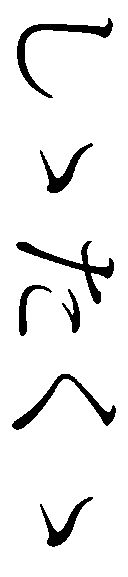

| 「超」怖い話 戌（いぬ） 「超」怖い話干支シリーズ (竹書房文庫) | |
| 加藤一 | |
| 竹書房 (2018) | |
本作品は縦書きでレイアウトされています。
また、ご覧になる機種により、表示の差異が認められることがあります。
一部の漢字が簡略字で表示されていることがあります。
※本書に登場する人物名は、様々な事情を考慮してすべて仮名にしてあります。また、作中に登場する体験者の記憶と体験当時の世相を鑑み、極力当時の様相を再現するよう心がけています。現代においては若干耳慣れない言葉・表記が登場する場合がありますが、これらは差別・侮蔑を意図する考えに基づくものではありません。
彫刻 平野太一
ドローイング 担木目鱈
巻頭言
加藤 一
怪に酔い、恐を喫む。
嗜好品の多くは、その芳醇さ多彩さ奥深さに嗜好者を引き付けて止まない。
この点は怪異怪談の類も似たようなもので、怪異嗜好者であるところの怪談ジャンキー諸兄諸姉もまた、これら怪異に深みや味わい、物珍しさを求めて止まないのだろうと思う。
一目にしたときの驚きや、その魅惑の舌触り、歯ごたえ、蕩 けるような味。中には、同じ怪異譚にも拘わらず、味わうたびに香りや手触りが違って見えてくるものすらある。
手にした怪異譚を次々に食らい散らかす嗜好者もいれば、何度も味わうために蔵書庫にしまい込んで舌なめずりをする嗜好者もいる。
何 れ愛し方は異なれども、怪異というものに溺れ酩 酊 していることに代わりはない。
その様は実にガストロノミック である。
貪欲にして贅 を厭わぬ、怪異嗜好者たる諸兄諸姉。
今年も「超」怖い話の旬がやってまいりました。
存分に、お楽しみを。
メモ
「その日に限って急に凄い音がして」
夜十一時を過ぎた頃、マンションの隣室から突然ドタバタと争うような音が聞こえた。
「それまでも偶 に音がするような気がしてたんですけど......気のせいかな？ とか、別の部屋かな？ ってくらいだったんですよ」
だがそのときは、隣の壁に何かが叩き付けられるような衝撃があった。
塩田さんは怯えた。
隣室は空き部屋だと知っていたからだ。
「ぎゃああああああっ」
女の、金切り声が聞こえた。
警察を呼ぼうかと思うほどだ。空き部屋だと知らなかったら、迷わず通報していただろう。
絶叫を最後に、ひっそりと静まり返った。
その晩は一睡もできなかった。
翌朝、部屋から外廊下に出ると、隣室のほうを見た。
エレベータに乗るには必ず前を通る必要があるのだ。
隣室のドアの下に、紙きれが挟まっていた。
隣室は空き部屋なのだが。
塩田さんはかなり逡巡した。
「でも、どうしても気になって。どうせ空き部屋なんだからいいんじゃないかって」
思わず拾ってしまった。
それは一枚の白紙だった。
右上に妙な汚れがある。
砂粒が付いたようであったが、払っても落ちない。
どうも並びが規則的なようで気になった。
他の部屋のドアが開く音がして、塩田さんは咄 嗟 にそれをコートの懐にしまった。
思い出したのは職場に着いてコートを脱いだときである。
持って帰ったところで戻す気にもなれない。
このまま会社のゴミ箱に捨ててしまおうとした。
だがそのとき、ふとある予感がした。
文房具置き場から虫眼鏡を取ってきて、砂粒のようなその紙の汚れをよく見る。
文字だった。
紙の右上の微妙なところに、斜めに並んでいたため、文字だとは想像も付かなかった。
どうやって書いたものか、それは人間が書いたとは到底信じられない、とても小さな文字だ。
手書きのようで所々読み辛いが、丁寧な文字であった。
毎ばん、うるさくして、とても困っています。
しつかにしてください。
わたしは上のかいの者です。
ケイコクします。
しつかにしないと、男を連れて、いきます。
「でもうち、最上階なんですよ。上はなくって」
塩田さんはそのメモをどうにか写真に撮ろうとしたが、文字が小さすぎて結局諦めたのだという。
日照権
「テレビが映らなくなっちゃったんですよ。近くに、やったらノッポのワンルームマンションが建って」
管理会社に苦情を入れると、対策中であるとは答えられたものの、テレビ好きの柴田君である。これには困ってしまった。
「いつ直るの、って訊いても『対策を検討中ですぐには......』みたいな感じで。で、いい機会だし衛星にしようかなって。ずっと気になってたんで」
テレビ好きの彼であるから、衛星の多チャンネルサービスは興味があった。
早速、アンテナとチューナーを買ってきてベランダに取り付けたのであるが......。
「やったことなかったんですけど、アレ滅茶苦茶難しくないっすか？」
パラボラアンテナは、真っ白な大きく浅い中華鍋のような形状が目立つが、あれは反射板に過ぎず、その先端の小さなパーツが受信部である。
これは非常に指向性が強く、僅かでも衛星の方向からずれると受像できないのだ。
柴田君は友人を呼んで手伝ってもらい、アンテナをゆっくりと右へ左へ向けても、ココという場所が見つからない。
マンションの四階である。
方角的には、ぎりぎり衛星が見えるはずなのだったが。
彼らは一旦諦めた。
ベランダから眺めると、憎らしいあのワンルームマンションのすぐ裏手に、みすぼらしい廃屋がある。
その廃屋は、ベランダからよく見えるので気になっていた。
道路を挟んですぐ向かい側。向かいは駐車場で、その一つ奥である。
ワンルームマンションの建設が始まったとき、遂に壊されると思ったのだが、どういう訳かそこだけ生き残った。
「あそこだけ昭和だよな」と友人も言い、「いい感じのスーパーにでもなればいいのに」と彼も応じた。
目障りだったのだ。
その家は、件のマンションの日陰にすっぽりと収まっている。
そうだ、と彼は考えた。
「日陰で可哀相だから、お日様を分けてやろうぜ」
柴田君は、パラボラの向きを変えて、鋭い西日を集めてその廃屋に向けた。
翌々日。
朝、カーテンを開けると、薄汚れた窓に妙な筋があることに気付いた。
（まぶしいです）
擦ってみたが、どうやら外側から描いてある。
ははぁ、アイツだな、と彼は考えた。パラボラの設置を手伝わせた友人の仕業に違いない。
抗議してやろうと思ったが、敢えて気付かないふりをすることにした。何も言わなければ、そのうちニヤニヤしながら向こうから言ってくると考えたのだ。
ただ、落書きだけは消した。
柴田君はその日仕事から帰ってテレビを点けた。
当時はまだアナログ放送が続いており、非常に画質が悪いながら、一応放送らしきものは見られたのだ。
デジタル放送のクリアな映像と比べ、あまりにも見苦しいノイズ塗れの映像であったが、それでも何も映っていないよりはマシと思えた。
その画面を眺めているうち、放送の映像に交じって、妙な映像が見えることに気付いた。
自宅のベランダからの映像に見える。
だが例の気障りなワンルームマンションはない。全体的に背の低い建物が立ち並ぶ見知らぬ風景だが、それでも彼が「ベランダっぽい」と思ったのはあの廃屋が見えたからだ。
距離、角度、それが、正にベランダから見えるあの廃屋と同じだった。
勿論断言はできない。何せ映像の品質が低いのだ。
（そんな馬鹿な）
そう思っても、一度そう見えるとそうとしか見えなくなってしまう。
番組の内容に集中しようとしたそのときだ。
「テレビを消してください」
はっきりと、そう聞こえた。
思わずリモコンに手が伸びる。
「テレビを消してください」
また聞こえた。
気のせいとは思えない。
リモコンの消音ボタンを押した。
静寂──には程遠い。
外をゆく車の音。上階の生活音。そうしたものが混じる。
それに交じって......ベランダから物音がする。
キュルキュル......微かに、ゆっくりと、ベランダのほうからそう聞こえる。
（この音って）
カーテンに遮られて見えないが──この音は、サッシの開く音である。
ヤバい、と彼は直感した。
考えるより先に逃げ出していた。
「で、例の友達んとこに転がり込んだんですが」
事情は話さず「家でテレビが映らないから」と説明した。
だがそのまま二晩居座ろうとして限界がきた。
友人は何があったか話せと、かなり真剣なトーンで迫ってきたが、それでも柴田君は説明を避け、何とかこの友人を使って自宅に戻ろうと考えた。
「いやさ、実は前の彼女がキレて乗り込んできてて......」
そう嘘を言うと、友人は物凄い笑顔になり「何だよそれ」と食いついてきた。
ちょっとお前話してくれる？ と、上手くそういう流れを作り、巻き込むことに成功した。
「そんなこんなで自分ちに戻って、そいつをけしかけて先に部屋に入れた訳です」
部屋を一通り覗いて出てきた友人は「テレビ点けっぱで誰もいないぞ」とだけ言った。
続いて柴田君も入る。
テレビは点きっぱなしだった。
そういう番組なのか、画面には一人の和装の老婆が正座をして、こちらを向いている絵が映っている。
音はない。
動きもない。ただ、座っているだけだ。
彼はテレビを消した。
「黴 くせえな」
友人が言った。
ほんの一晩空けただけなのに、全く見知らぬ臭いがする。
ベランダのほうからだ。
「ちょっと、ベランダ見てくれる？」
「何で」
いやちょっと、と言い淀む。
友人はつかつかとカーテンに歩み寄り、カーテンを開く。
「うわ、何これ」
カーテンの裏側にびっしりと黴が生えていた。
「あの部屋、西日きついんすよ。黴なんか生える訳ないんです」
柴田君はうんざりした様子で、そう語った。
痣
小早川君が大学生の頃の話である。
「自分、テニスのサークルに入っていたんですよ」
彼はその大学公認のサークルに所属していたが、健康的な運動とは程遠い生活であった。
テニスとは名ばかりで、その活動内容はほぼ飲み会といっても過言ではなかったからである。
夕方になればいつの間にか仲間達が集まって、なし崩しに近くの居酒屋で飲み始める。
そこで散々騒いだ後でエンジンが掛かってくると、小洒落たバーやクラブに繰り出しては毎日を楽しんでいた。
「金持ちの友人が多かったんで、殆ど奢りでしたけど」
そして翌朝目が覚めると、隣には知らない女性が寝息を立てている、といった爛 れた毎日を送っていた。
「あの頃は、ね。まあいいか、なんて軽く考えていたんですけどね......」
ある日のこと。異様なまでの騒々しさを感じて、小早川君はベッドの上で目を覚ました。
何処からともなく聞こえてくる、悲鳴のような音が、反応の鈍った脳内を掻き混ぜるように響いている。
これは、あれだ。うん。テレビを点けっぱなしで寝てしまったに違いない。
上半身を起こしてみるが、がっつんがっつんと責め立ててくる頭痛のせいで、意識が朦 朧 としている。
痛む頭部に手を当てながら、周りを見渡してみる。視界は薄い膜が張ってあるようにはっきりとはしていなかったが、ここが自分のアパートであることだけは間違いなさそうだ。
だが、どうやっても昨日のことを思い出すことができない。
居酒屋で騒いだ後、数人で行き着けのバーに行ったことまでは明瞭に覚えている。
しかし、その後の記憶は一切残っていなかった。今こうして自分の部屋で眠っていることが、正直不思議で仕方がなかった。
「......ん、んぎゃぁぁぁぁぁぁ！ 」
またしても悲鳴が耳に入ってくる。我慢ならない金属質の厭らしい絶叫が、彼の頭痛をより一層激しくさせる。
隣の部屋に置いてあるブラウン管へと、急いで視線を向けようとした。
その瞬間、悪寒が全身を駆け巡り、思わず仰け反ってしまった。
テレビの電源が入っていなかったせいでは、勿論ない。
彼の脇で、見知らぬ女性が寝息を立てていたからであった。
このようなことは、今まで数知れず経験していた。しかし、今回ばかりは勝手が違う。
心の底から肝が冷えてしまった。
可愛らしい寝息を立てている女、その顔には大きな痣が幾つも浮かび上がっている。
何だろう、コレ。ひょっとして病気なのか。だとしたら可哀相だよな......。
顔面を占領している痣をまじまじと見つめながら、半ば朦朧とした頭の中でそんなことを考える。
しかし、これは本当に痣なのであろうか。黒々としたそれは、痣というよりも穴に見えて仕方がなかった。
「......ん？ 何か、おかしくね？」
そう呟きながら、彼女の頬を凝視する。
そこには一際大きな痣が浮かんでいた。
彼は迷うことなく、その痣の真ん中を人差し指で軽く押してみた。
「わっ！」
思わず甲高い声が、喉から湧き上がってきた。
「うわぁ......」
まるでやみつきになった子供のように、何度も何度もその痣を押し続ける。
だが、人差し指には何の感触もない。
その部分には、何も存在していなかったのだ。
彼はまじまじと女の顔を凝視した。ショートカットのよく似合う、綺麗な娘であった。
しかしその顔には、幾つもの穴が開いている。
その穴は漆黒の闇に繋がっているようで、何処までも深く感じられた。
小早川君は女を覆っている掛け布団を静かに捲ってみた。するとそこには、何一つ身に纏っていない美しい身体があった。
きめ細やかな肌は驚くほど白く、正常であったならば思わず魅入ってしまう程の美しさに違いない。
しかし、顔面から手足に至るまで、コイン大の穴が幾つも開いているのだ。
とりわけ、腹部は凄まじかった。ここだけは円形ではなくて、胸の辺りから腰までが全域に渡って闇と化していた。完全に上半身と下半身に別れているようにしか見えない。
彼は深く考えもせずに、その黒い部分に右手を添えた。だが、その感触は一切感じることができない。
その途端、またしても女の金切り声が室内に響き渡った。
反射的に右手を引っ込めた瞬間、腹部の黒い部分が彼女の全身を一気に浸食していった。
腹部の大きな闇は、物凄い速度であっという間に上下へと広がっていく。
そして、彼の見守る中、彼女は穴に飲まれてしまったかのように、その場から消え失せてしまった。
「夢を見たんだ、って思っていたんですよ。でも......」
シーツには、焼けたような大穴がしっかりと残っていたのである。
しかし、その下にあったマットレスには被害がなかった。
小早川君はすぐに、昨晩一緒に飲んでいた友人達へと電話を掛けた。
「勿論あの女のことをですね。誰か知っているんじゃないのか、って思って」
友人の殆どはそのとき泥酔していたせいか話が通じなかったが、一人だけははっきりと覚えていた。
「オレ、酔っぱらったオマエをアパートまで送ってったじゃん。え、女？ そんなん、いなかったよ」
イケメン
館山君は販売業に従事している。
商品名は伏せるが、ほぼ毎日配達と営業があった。
「それで日中は外に出ることが多いやん？ 割と時間を自由に使えるってね」
彼はとてもフランクな口調で言う。
三十五歳、独身。ヒップホップやトランス系音楽が好きそうな風貌だ。
いや、実際の所、彼はクラブが大好物だし、少しＤＪ経験もあるという。
音楽の話から夏フェスの内容に話題が移ると、彼が頬をぷるぷる震わせて笑う。
「夏か。俺、二年くらい前の夏にちょっと面白いこと、したんだよねぇ」
館山君の会社では夏に全社を挙げてのバーベキューがある。
販売部の彼が普段会わないような部署の人間も沢山来るので新鮮だった。
「けっこー、うちの会社の女ども、レベルたけーの。土地柄かもしれないけど、美人が多くてよぉ。たまんねぇな、仲良くなりてぇな、って思った訳」
クラブに来るノリのいい「ちょっとワルい女に飽きていた」から、清楚で可愛い系や美人系が余計によく見えたと彼は言う。
「こういう女どもはちょっとワルいのに魅力を感じる。分かるやろ？」
ところが女子社員は彼の魅力に靡 かない。
それどころか、内勤の色白で無駄に背の高いガリガリの男達と仲よさげに肉を焼く。
連中は館山君とは真逆のタイプだ。
その中でも三ツ谷という男は社内の美人達を独り占めにしている。
「正味の話ね、ムカつく訳よ。俺のほうがいい男ジャンか。なんぞ!? と思うわな」
何度も三ツ谷の近くに行っては女性達にアプローチしてみたが、どうにも反応が悪い。
打っても響かない、と言うのだろうか。
とうとうバーベキューは終わり、普通に解散となった。
館山君は三ツ谷のことをしっかり覚えた。
そして会社から追い出してやると決めたのだ。
三ツ谷さえいなければ、俺にもオンナが回ってくる確率が五十パーほど増える、と彼が踏んだからである。
「休み明けに社内名簿とか色々ツテを使って三ツ谷の家を調べたよ」
スマホのナビを使い、三ツ谷の家を突き止めた。
配達中に行ってみれば、そこは一軒家だった。
何処か洒落たデザインの平屋建てで、庭とシャッター付きの車庫まである。
「情報集めて分かったけど、三ツ谷が親戚の家を借りてるらしい。持ち主の親戚がアメリカに長期滞在するから、管理代わりに、だってよ。ホントか知らねぇけど」
三ツ谷はその大きな家に一人で暮らしているようだった。
豪 奢 な邸宅を見ていると、館山君は余計に腹が立った。
だから厭がらせを始めた。
まず、蛇の餌である冷凍マウスを買い求め、大量にポストへ突っ込んでやった。
庭にも同じく冷凍マウスをばら撒いておく。
「住宅街は、意外と昼間は人がいないんだよなあー。だからこれくらいダレにも見られずにやるのは朝飯前だ。空き巣とか強盗とか、ボーコーとか、昼間やるのがマジお勧めだよ」
狙いは三ツ谷が心を壊して退職することだった。しかし相手には何も変化がなかった。
「なら、もっと分かりやすく、やるしかない」
館山君は厭がらせをエスカレートさせた。
野良の仔猫や近所で産まれたばかりの雑種の仔犬を捕まえて、捻り殺した。
それらを三ツ谷の家の屋根に投げ込む。
ただし、それは真夜中に行った。
「何てーかさ、呪いを掛けてやれと思ったんだ。だったら夜中だろ？」
仔猫の死体を一つ投げては「三ツ谷死ね」。
仔犬の死体を一つ投げては「三ツ谷地獄に落ちろ」。
屋根に死体が落ちる度大きな音がしたから、毎夜二度だけの投 擲 と決めた。
勿論上手く屋根に引っかからない物もあって、何処かへ落ちることもあったが、知ったことではなかった。
何夜か繰り返していると三ツ谷の家に変化があることに気が付いた。
昼間通ると凄い数のカラスが塀や屋根、庭の木に群がっている。
夜中に行くと、稀に三ツ谷らしき男の叫び声が聞こえた。
この頃になると、三ツ谷が会社を頻繁に休むようになった。
確かめに行ってみると本当に欠勤が増えている。
「ああ、しめしめ。これは心に来ているぞ、とね。呪いの効果か、それとも屋根とか庭に落ちている動物の死骸のせいか分かんねーけど」
そろそろ仕上げだと館山君は思った。
あるツテを辿り、豚一頭分の臓物を手に入れる。
気温が高いせいか、すぐに傷み始め、酷い臭いを放ちだした。
これを三ツ谷の家の庭に広げて置いてやる算段だった。
深夜、いつものように三ツ谷の家に向かう。近づくと回転する赤色灯が見えた。
警察かと身構えたが、パトカーの他に救急車が来ている。
止まっているのは三ツ谷の家の前だ。
「しめたと思ったね。三ツ谷への呪いが決まった！ っていうカンジ。このまま死んでくれたら万々歳じゃん？」
彼は豚の臓物を適当に川へ投げ捨てて、家へ戻った。
翌日、ワクワクしながら会社へ行ったが、期待していたような変わったことは何もなかった。
あったとすれば三ツ谷が休んでいたことだけだ。
「何だ、糞、って思っていたんだけど、後からスゲエことが分かった」
あのパトカーと救急車が来ていた夜、三ツ谷は同棲していた彼女を殺しかけたようだ。
そのせいで警察に捕まった、と言うのだ。
そして三ツ谷の懲戒免職が決まった。
内勤の連中から流れてきた情報だから信憑性はかなり高いと言える。
「ああ、呪いは成就した、これで三ツ谷がいなくなった、俺の天下だって、思ったね」
しかしそれからも館山君は社内の女性と付き合うことはなかった。
三ツ谷への呪いの後、館山君本人には何もなかったのだろうか？
「ないない。あるとしたら、煙草吸うと咳が止まらないことがあるくらい」
自分の言ったことを忘れたように、彼はジッポーライターで煙草に火を点けた。そして、酷く咳き込んだ。
少し話していると、あ、と彼は何かを思い出したような様子で声を上げる。
「変わったことって言うのかなぁ。最近クラブでナンパして連れ込んだオンナが変な奴ばっかりなんだよ。メンヘラ？ っていうのかな？ 心を病んだような奴」
館山君の部屋に招き入れ、事に及ぼうとすると女性の様子が変わる。
何か空中の一点を見つめたかと思うと、何も言わずに部屋から飛び出していくのだ。
「何人か追い掛けていって引き摺り戻そうとしたけど、駄目だったよ。何でも俺の部屋にユーレーがいるからだ、って」
背の高い男で、首から大量の血を流しているらしい。
「そういうの見る奴って、心が病んでるか脳の病気なんだろ？ ナンパが成功してもそういうクズみてぇなオンナばっかり当たるって、俺もツイてないな」
三ツ谷がどうなったかも質問してみる。
「あ？ 知らね。あれからケッコー経ってるし、ソイツももう見ねぇし」
最近赤黒い血痰を吐くようになったと、館山君から連絡があった。
そして今も女性だけが見る〈男のユーレー〉が出ていると言う。
現在は自分の部屋だけではなく、女性を伴って入った所全部に現れるらしい。
だから、今俺はとても女不足だと、彼は嘆いた。
しかく
萌さんがムダ毛処理をしていたときだ。
左足、脛の下のほうに異物を発見した。
埋没毛だと彼女は思った。それは新しく生えてきた毛が皮下に潜って伸びたものだ。
こうなってしまうと皮膚を抉り取って取り出すしかないが、場所が遠いので細かい作業がし難い。
（後にしよ......）
放っておけば更に伸びて別のところから顔を出すこともある。
暫くは靴下で隠すことにした。
だが数日してみると、埋没毛は更に増えていた。
最初に見つけたものの傍に、更に四本。長いもの、短いもの、曲がって互いに交差したものまである。
（えっ、重なったりするの？）
初めて見た。
それは平仮名で「しかく」と書いたように見えた。
字とすればかなり崩れた、ミミズの這うような字である。
思わず上から擦ったが、消えない。
（ちょっと、ヤバいじゃん）
これ以上放っておくとどうなるか分からない。
彼女は夢中で膝を折り曲げ、脛の先の埋没毛を処理し始めた。
「表面を、こう、毛抜きの端っこでむしるようにして......」
血が出るほど掘ったが、毛は掴めない。
更に深いところにあるのか。
痛みがあったので、彼女は処理を中止した。
それほど伸びるものではない。そのうち成長が止まって、吸収されるはずである。
だが、更に数日しても、「しかく」は消えなかった。
暫くして。
今度は右前腕の肘近くに「し」を発見した。
内側である。埋没毛ではない。
こんなところに太い毛は生えない。
タトゥーのように、それは皮膚の奥に、赤く、「し」とあった。
「一週間くらいの間に、『か』が出てきて、すぐ『く』も出てきちゃって」
それは絆創膏で隠し続けたという。
「最近、スカート履かないじゃん」
と言っていた彼氏が、彼女の背中を見て「何それ」と言った。
「えっ、何」
「何って。肩甲骨の下の辺り」
自分で見える訳がない。
「どうなってるの」
恐る恐る訊ねると、彼氏は間近で確認し、「へへっ」と笑い声を上げた。
「何これ。しかくって書いてある」
「その頃、脛の埋没毛のほうはだいぶ薄くなってはいたんですが、まだぎりぎり読めるくらいで」
脛も彼氏に見せた。
彼氏は笑うのを止め、少し怪訝な顔をした。
「えっ。こっちは『いたい』なんだけど」
そんな馬鹿な、と思ってよくみると、確かに「か」が崩れて全体が薄くなったものの、新たに短いものが二本、「し」の横と「く」の横に現れ、かなり崩れてはいるが「いたい」と読めなくもない。
「違うよ！ これは『しかく』だから！」
咄嗟に強く否定していた。
自分でも何故そんなに強張ったのか分からない。
「しかく」だろうと「 」だろうと、これが単にそう読めるというだけのことなのだが。
「......で、三日前に気付いたのがコレなんですけど」
彼女は左手中指の付け爪を外して見せた。
爪の根元、白くなったところぎりぎりのところに、黒い異物が顔を出しつつある。
それは細く、だが目立つ。
ちょんちょん、横に伸びた「＋」、そして更にちょんちょん。
「ねぇ。これが伸びてくるの嫌でたまらないんですけど」
これは「いたい」なんじゃないかと思う、と彼女は不安げに言った。
隠れ里
定年退職した大森さんの趣味は、キノコ採りである。
盆地特有の夏の暑さが一段落すると、待ちに待ったシーズンが始まりを告げる。
その日も、いつも通りに始まった。
目覚まし時計の力を借りることなく、彼は早朝三時半に目を覚ました。
辺りはまだ闇に包まれているが、彼はそそくさと着替えると、鼻歌を歌いながら小さな山の松林に向かって軽自動車を走らせた。
そして数時間程度、至福の時を過ごした。
マツタケにはお目に掛かれなかったが、アブラシメジやハツタケをしこたま採ることができて、満足して下山することにした。
〈こんなことってあるのだろうか〉
大森さんは全身汗だくになりながら、ひたすら歩いていた。
いつもならばもう自宅で寛いでいる時間なのに、今はこうして道に迷っている。
松林から麓 の駐車スペースまで、歩いて十数分の距離だというのに。
しかも初めての場所ならいざ知らず、毎日のように訪れている勝手知ったる小さな山なのだ。
どうして遭難するなどということが起こり得るのであろうか。
彼は歩みを止めることなく、辺りに絶え間なく視線を巡らせた。
樹齢数十年の立派なアカマツが、相も変わらず鬱 蒼 としている。
もう数時間程歩いているというのに、少しも景色に変化がない。
おかしい。これは絶対に、何かがおかしい。こんなことがあるはずがない。
しかし、これは現実である。歩き疲れた足は悲鳴を上げているし、お気に入りのポロシャツは汗で変色している。
それより何より、信じ難い程の喉の渇きが彼を責め苛 んでいた。
〈もう、ダメかもしれない〉
初めて経験する酷い眩暈 に襲われて、大森さんの足下が覚束なくなってしまった。
そして何かに蹴 躓 いてその場で倒れると、顔面が地面に叩き付けられた。
土塊が口内に入り込んで、思いっきり噎 せ返ってしまう。
盛んに唾を吐きながらその場で立ち上がる。
すると目の前には、異様な光景が広がっていた。
やけに明るく、開けた土地であった。何処からどう見ても、新興住宅地に違いなかった。
この奇妙な光景を目の前にして、彼はひとまず安心した。
「ああ、助かった......」
そう声を出して、辺りを丹念に見回した。
光沢のある屋根や壁の程度から見て、どの家も建てて間がないように思われた。
洗ったばかりの洗濯物が至る所に干されており、軽快な音楽や子供の声が、何処からともなく聞こえてくる。
痛む両足を半ば引き摺りながら、彼は助けを求めて歩き始めた。
何処の住宅街に迷い込んでしまったか分からないが、とにかく水を一杯貰いたい。
喉の渇きさえ収まれば、あとは自分で何とかできるはず。
だが、打ち立てのアスファルトを散々歩き回っても、人の姿は一向に見つからなかった。
心底疲れ果てて、これまた新しめな電信柱に両手を付けながら彼は身を預けた。
そして地名や番地を探してみるが、何処にも記載されていない。
やむなく側にあった家まで歩み寄っていく。
だが、そこには地名や番地どころか表札すら発見できなかった。
表札が本来あるべき場所には、何も貼付されていない。
落胆しながらも、彼はめげることなく次の家へと歩いていった。
しかし、その家も同様であった。その次も、またその次も。
一体、ここは何処なのであろうか。
彼は半ばパニックに陥りながら、最後の手段へ望みを託した。
手当たり次第に、呼び鈴を押し始めたのである。
次から次へと、目の前にあるスイッチを押し続ける。機械的な鈴の音が弱々しく聞こえてくるが、反応する人は何処にもいない。
何だろう、ここは。これから、どうしたらいいのか。
二十軒以上の家を訪れたが、誰も応えてくれない。
子供のはしゃぐ声や何処からか漏れている音楽の音は相変わらず耳に入ってくるにも拘わらず、人の気配は感じられない。
絶望感に襲われながら天を仰いでいると、視線の端っこに動き回る何かを捉えた。
咄嗟に視線を向けるが、その黒い物体は素早く塀に隠れてしまった。
痛む両足に鞭 打って、大森さんは一生懸命追い掛けた。
すると前方に見える一軒家の屋根の上に、黒っぽい何かが登っているように思われた。
荒い息をしながら、立ち止まってそれを凝視する。
それは真っ黒い格好をした、幼児にしか見えなかった。
しかし、幼児が屋根の上に登っているというのもおかしな話である。
〈猿か？ いや、違うな。やっぱり、子供か？〉
その姿は身体の凹凸が一切なく、まるで影絵のように黒々でのっぺりとしている。
そのとき、彼の全身を物凄い悪寒が駆け抜けていった。
「えっ！ えっ！ えっ！ えっ！」
背筋に冷たい汗を感じながら、慌てて視線を巡らせた。
いる。一杯、いる。そこら中に、腐るほどいる。
真っ黒い子供のようなものが、あちらこちらから自分をじっと見つめていた。
その姿は漆黒でやけに長細く、まさしく影のようで、到底生きている人間だとは思えない。
顔には目すらないはずであるのに、自分を見つめているといったことには何故か確信を持つことができた。
大森さんは間髪入れずに、その場から駆け出した。最早、足が痛いなどとは言っていられない。行く当てがある訳でもなかったが、とにかく全力でその場から逃げ出した。
そしてこぢんまりとした丁字路を右に曲がった瞬間、何かに蹴 躓 いて思いっきり転んでしまった。
顔面をしこたまアスファルトに打ち付け、激痛に思わず顔を顰める。
口内に広がる鉄の味に我慢できずに、その場で嘔吐を繰り返しながら、咄嗟に瞑った瞼をそろりと開いてみた。
するとそこには、見たことがある景色が広がっている。
何度目をしばたたいても、聳 え立つアカマツの木々が月明かりに照らされて鬱蒼と生い茂っていた。
〈ひょっとしたら！〉
大森さんは月明かりだけを頼りに、麓に向かって足を速めた。
今度は何の問題もなく、駐車スペースまで辿り着くことができたのである。
真夜中を過ぎた辺りになって、大森さんはやっと自宅まで帰ることができた。
あそこにいた時間を考えると、とてもじゃないが信じられないような時間の経過であった。
暫く自宅で呆然としていたが、当初の目的を思い出して、腰にぶら下げた布製の腰袋に慌てて目を遣った。
そこには、取り立ての新鮮なキノコが沢山入っているはず。
しかし入っていたものは、腐敗してぐちゃぐちゃになった菌糸類の成れの果てだけであった。
数日を経て、大森さんは友人達と連れ立って、あの山の付近を徹底的に探してみた。
だが、あの新興住宅街は何処にも見当たらなかったそうである。
彼らの面影
「取材で東北を移動していてね」
古川さんは雑誌の取材で、同業者と一緒に車を運転していた。
「奴は別の撮影かなんかで近くにいるっていうから、じゃあ運転してくれよって言ってさ」
二人は、同じ業界の付き合いであるが、偶に飲みに行く友人でもあった。
古川さんが助手席で田舎道を眺めていると、左手の森が開けて、奥にこんもりとした杜が見えた。
恐らく神社だ。
「何となく目を奪われてさ、追っていたらふと、目に付いたんだよ」
祭りだ、と彼は直感した。
車を止めてもらうことにした。
同行者は「祭りなんか」と言っていたが、取材するのに話のタネは多いほうが良い。
古い石の鳥居を潜り、杜まで続く長い参道を歩く。
日中であったが、辺りは別世界のように暗かった。
木立があるとはいえ、それでも妙に暗い。
「おい、何かやったら暗くねえか」
横でカメラを持った同行者が呟く。
彼は写真が専門であるため、光量には敏感である。
う～ん、と首を傾げながら歩いていた。
参道がカーブし、木立の向こうに神社の境内が見えた。
一本の大きな木が生えている。
「でっけえイチョウだな」と、同行者はカメラを構えたが、シャッターは切らずにすぐにカメラの画面を確認した。
「暗いか？」
「暗い......いや......あれ......おかしいな」
ふと木を見ると、最前気が付かなかったものがある。
提灯だ。
二十程の赤い提灯が、木の幹の周辺にある。
それは、取り囲む、或いは並ぶというような配置ではなかった。
高さも、配置もばらばら。
そして、提灯を取り付けている支柱や釣り竿のようなものは見えない。
「おい、行こうぜ」
提灯が気になった古川さんは先を急ごうとするが、同行者は「この構図が欲しいんだよ」と言いながらまだカメラと格闘していた。
古川さんが一人で行こうとすると、「お前が写ったら台無しだろうが」と制止された。
仕方がなく古川さんは、同行者の横で神社を眺めていた。
奥にある黒い本殿はよく見えず、手前の大木だけが見える。
その周囲に、人が数名いた。
人影は皆小さい。恐らく子供だ。
祭りの支度をしているのだろうか。
支度中のようだが、赤い提灯にはもう火が入っていた。
煌 々 とした無数の赤い提灯が、まるで浮かぶようにしている。
それを眺めるうち、古川さんは一刻も早くあの中へ入っていきたい衝動に駆られた。
「まだかよ」と古川さんが訊くと、連れはカメラと格闘しながら「おかしいな、設定が効かないんだよ」と言った。
見ろよ、と差し出されたカメラの液晶プレビューには、暗くノイズの多い写真が映し出された。
「まるで夜みたいだろ。かなり高感度に振ってこれだから」
確かに暗いが、イチョウの大木は確認できる。
「後からどうとでもできるだろ」と適当なことを言った古川さんだが、素人ながら写真の出来には心底がっかりした。
さぞ幻想的に撮れる風景だろうに、まず無数に浮かぶ赤い提灯がない。
「......壊れてるんじゃねえのか。提灯くらいは写るだろ」
そう言うと、同行者は首を傾げた。
「提灯？ 何処に？」
何処にって......と古川さんは辺りを指さした。
「そこにもそこにも、そこらじゅうにありますがねぇ。赤い提灯が。目の設定を調整したほうがいいんじゃないですかねえ」
同行者は怪訝な顔になる。
「......おい、しっかりしろよ。提灯なんかないって。居酒屋かよ」
「赤提灯といや居酒屋にしかねえって発想。これだから酒飲みはいやだねぇ」
古川さんはイチョウの大木に向かって歩き出した。
近くに来ると、子供達がイチョウの根元を掘り返していた。
子供達は皆、祭りの衣装なのか古めかしい着物を着ており、手で掘り返している。
「邪魔してごめんね。お祭りかな？ 何ていうお祭りなの」
古川さんが訊ねても、子供達はしゃがみこんで無心に手で地面を掘り返している。
ふと、彼らの傍らに小ぶりな木箱があるのに気付いた。
大きさはまちまち、材質も、金槌でも入っていそうな質素なものから、釉 を塗ったものまで様々で、人数よりも多い。
（これを埋めるのか......？）
「......おいっ、どうしたんだって！」
同行者の呼ぶ声で我に返った。
子供らと木箱を交互に見比べるうち、かなり引き込まれていたようだった。
「お、大きな声出すなよ。この子達が驚くだろ」
「この子って誰だよ！」
本当に何も見えていないのか。
彼は急に怖くなった。
そうなると確かめるのも怖い。
古川さんは何も言えなくなり、じっと同行者を見返した。
カメラと、カメラケース、腰にぶら下げたポーチが目に留まる。
（ああ、埋めてえなぁ）
そんな考えが浮かんだ。
「古チン、ちょっと変だぞ、お前。疲れてるんだろ。戻るぞ」
返事を待たず、彼は踵 を返して参道の入り口へ向かって足早に歩き出した。
慌てて後に続く古川さんだったが。
（埋めてえなあ）
前を行く同業者の後ろ姿を見て、そればかり考えていたという。
車に戻った彼らはその後、無事お互いの仕事を済ませた。
「それから暫く空いてなぁ。一年近くしてかな、二人で飲む機会があったんだよ」
一頻り酔っ払った頃、顔を赤くした同業者がその話を始めた。
「なぁ、去年立ち寄った変な神社でさ......覚えてるか？ お前、変な風になってただろ」
古川さんは鮮明に覚えているものの、「まぁ、何となくは」と口籠った。
「変なこと訊くけど、あのときさぁ、もしかしてお前、俺のこと埋めたいと思ってなかった？」
内心、ぎくりとした。
咄嗟に「馬鹿か。そんなこと思う訳ねえだろ」と否定した。
嘘ではない。古川さんも、別に明確にこの男を埋めたいと思ってはいないのだ。漠然と、何かを埋めたいと思っただけだ。
「......ふ～ん、まぁ、そうだよな」
「何だ、どうしたんだよ横チン」
横川さんははぐらかすように話題を変えたという。
「それから少しして、横チンとは連絡付かなくなってな」
古川さんは心配したそうだが......。
心配しつつ、ふと不思議に思った。
（あいつ、何で俺が埋めたがってたって気付いたんだろうな）
ほどなく、行方が知れた。
「急に連絡が来て、引っ越したっていうんだよ。年賀状見てさ。で、住所見て、何処の田舎だって思って地図で調べたら、あの神社のすぐ近くなの。俺も驚いて」
理由は分からないという。
雨
数年前のことだ。
小沢君は友人と二人でキャンプに出かけた。
「社会人になったとき、自由な金が増えたので一気に用具を揃えたんです」
ソロキャンプでも二人でも使えるサイズのテント等、細々とした物まで購入したと言う。
「初キャンプは秋にしました。一泊二日でまず慣れようと。因みに、一緒に行った友人は長谷川と言って、大学時代の友人です」
男二人で車に乗り合わせ、キャンプ場を目指す。
現地に着けば意外と人がいる。既に場所があまり空いていない。
それに素人二人、アウトドアに不慣れな様子を見られるのが恥ずかしくて仕方なかった。
「だから、キャンプ場を流れる川を遡って、適当な平地を見つけてそこに車を止めました。ここならキャンプの練習が幾らでもできるって思ったので」
四苦八苦しながらテントを張り、バーナーで湯を沸かす。
ドリップで淹れた珈琲が物凄く美味しかった。
「それだけで凄く満足しましたね。でも、夕食の準備を早く始めようって長谷川と忙しく働きました」
水や食料は車のトランクに用意してある。
初心者でも簡単なメニューを選んで作り始めた。
それでも時間が掛かり、薄暗くなってから食事が完成した。空腹だから美味しかった。
食べ終えた頃、ポツポツと雨が降り出す。
秋の天候は変わりやすいと聞いていたので、テントはきちんと雨対策をしていた。
小沢君は長谷川君と二人、テントへ潜り込んだ。
「ＬＥＤランタンを挟んで、延々話していたんですが、遂に雨は本降りになりました」
テントを叩く雨の音はかなり酷くなっていた。少し下には川があり、増水の危険がある。
小沢君は長谷川君に車へ戻ろうと提案した。
今からテントの撤収は難しい。大事なものだけ持って行き、シートを倒して車中泊したほうが安全だ。そう主張したが、長谷川君はうんと言わない。
「キャンプ、アウトドアなのだから、ぎりぎりまで耐えてみようって言うんです。僕はそれがちょっと厭で、少し言い争いになりました」
結果、小沢君は車で就寝、長谷川君はテントに残ることになった。
「でもやっぱり心配だから、長谷川にはいつでも車に来いよって、言いましたけどね。ただ（ドアを）ロックしているから、寝てたら窓を叩いて起こしてくれって」
小沢君は車の運転席からテントのほうを眺めた。
雨の中、テントはぼんやりと光って見える。内部で使っているランタンのせいだろう。
（いつまで消さないんだろう。いや、不安で消せないのかもしれないな）
そんなことを考えながら雨音を聞いている内に、スッと眠りに落ちた。
どれくらい眠っていただろうか。
窓を叩く音で目が覚めた。
身体を起こして外を見ると、長谷川君が立っている。
車内に入れたところ、彼はほっと一息吐いた。
テントの下から水が入ってきたようで、眠れなくなった、素人の雨対策は失敗だったよと笑っている。
「だよな、って同意しながらテントのほうを見ました。真っ暗になっていました。ランタンを消してきたか、持ってきたのだろうと思いましたね」
長谷川君と話しながらスマートフォンの時計を確認する。
午前三時半を回っていた。
途中、長谷川君が尿意を訴え、車から出ていった。
雨なのですぐに戻ってくるだろうと思っていたが、幾ら待っても帰ってこない。
雨はまだ強く降っている。寒さもあるだろう。外にいることは考えられない。
「どう考えても遅すぎるので、またテントに戻ったのかなって」
しかしテントがあるはずの場所は暗い。
ランタンを点けていないのか。寝るだけならそれでもいいのかもしれないが気になる。
「何だか胸騒ぎがしたんですよ。虫の知らせというか」
ハンディライト片手にテントへ走った。
出入り口は閉じられている。中を確認しようと手を伸ばした。雨音の隙間を縫うように、中から何かくぐもった声が聞こえてきた。
出入り口を開く。真っ暗な中をライトで照らした。
確かに長谷川君はいた。
が、身体中をガムテープでがんじがらめにされた状態だった。
口にはタオルで猿ぐつわが周到に噛ませてある。
拘束を解こうとしたとき分かったが、腕は後ろ手にされていた。
「長谷川が怯えながら訴えました。僕が車に移動した後、テントに知らない大柄な男が押し入ってきた、って」
目出し帽を被った男は、あまり聞かないイントネーションで喋っている。
大人しくしていたら命は取らないと、登山ナイフを突きつけてきた。
だから長谷川君は言うがままに縛られ、猿ぐつわを受け入れた。
男はキャンプ用具と長谷川の携帯や財布等の持ち物、食料などを全てリュックに入れる。
長谷川君は怯えながらじっとしていた。
男が次に何をするか分からないので、その様子だけに注意していた。
全てを奪い去った後、ランタンを手にした男が低い声で言った。
〈やっぱり、殺しとくわ。それが安全だから〉
男は両手で長谷川君の首を絞めた。すぐに意識が遠のき、彼は気絶した。
意識を取り戻したのはいつか分からない。
小沢君に助けを求めようにも声も出せないし、手も足も出なかった。
這いずりながらテントを出ようとも考えたが、犯人は丁寧に出入り口のファスナーを閉じている。外へ出ることが難しかった。そこへ小沢君が来たのだ。
「すぐに警察へ通報しました。長谷川は救急車で運ばれていって。僕は凄く長い時間を掛けて色々訊かれましたね」
長谷川君も警察にはでき得る限りの証言をした。
「二人して思ったのは、相手がかなり手慣れていたということです。多分ですが、僕らのような、人から離れた所にいるキャンパーを狙った強盗じゃないかなぁ。もしかしたら、別の目的で女性も狙っていたのかもしれません」
落ち着いた後、小沢君は疑問に思うことが出てきた。
それは〈車に現れた長谷川君〉と〈縛り上げられた長谷川君〉のことだ。
時系列を並べるとおかしい上、そもそも〈縛り上げられた長谷川君〉は車に来ていない。
「そうなんです。長谷川の言う通りだと、僕の車に彼が来たという事実そのものがなくなるんですよ。そうなった場合、僕の横に座ったのは、一体誰なんだ？ って」
二人で幾ら話し合っても、お互いの矛盾は解決しなかった。
小沢君は、長谷川君が車に来たことは事実だと主張し、長谷川君は一度も外に出ることなく、男に襲われたのだと譲らない。
「結局、僕の車に乗った長谷川は誰か、今も分かりません」
小沢君と長谷川君はそれ以来、キャンプをしていない。
警察から戻ってきたテントなどは、倉庫に投げ込んでそのままだ。
「長谷川はあれ以来心に傷があるのでしょう。カウンセリングに通っています」
事実、長谷川君は犯人に財布ごと運転免許と保険証を奪われている。
身元がばれているので、生きていることが分かればいつまたあの男が殺しに来るか分からないと怯えているのだ。
「当然、彼は引っ越しとかしましたし、転職しましたからある程度バレないと思うんですが、やはり安心できないようです」
そんな長谷川君の様子を、小沢さんはこう表現する。
「人が変わったようですし、何か、魂が抜けたような表情になることもあります」
加えて、影が薄く感じることもあると言う。
生命力が少ないと言い換えてもいい、らしい。
一連の事件は何故か報道されなかった。
そして犯人は今以て捕まっていない。
今も、あの日のことを小沢君は後悔をしている。
「長谷川が息を吹き返せたのは、本当に運が良かったんです。少し間違えていれば殺されていた。雨が降った後、僕が車にちゃんと彼を乗せていれば。いや、キャンプなんかに誘わなければ良かったんです」
後悔しかないと言う。
今、彼は雨が嫌いである。
二階
小谷さんの生家は木造平屋である。
平屋だが、二階があったのだそうだ。
それも彼にしか行けない二階が、である。
「俺もね、小さくって。七つの頃だよ。そんなに細かくは覚えてなくってさ」
それでも夢などではない。
「親によるとさ、その頃俺、二階でしか飯食わなくなっていたんだよ」
給食も殆ど手を付けず学校から連絡が来たのだという。
それが続いたものだから、二階が夢や幻であるなら彼のほうが先に参ってしまっていたはずだ。
平屋の廊下のどん詰まりにある納戸の奥に、彼にしか見えない階段がある。
食事を持ってそこを上がると、二階である。
二階は寒々とした、しかし広い部屋が一つだけある。
上がった正面に大きな窓があり、そこから差し込む光で白化した板張りの床が目立つ。
窓の外は大ぶりの枝が幾つも張り出した森で、家の周囲の何処とも似ていなかった。
部屋の中央に小さな卓袱台があり、そこで食事を摂った。
だが、いざ食事が始まるとそこから彼の記憶は急に曖昧になる。
「どうもさ、誰かと一緒に食べてた気がするんだよ。でもそれが誰なのか、全然思い出せなくって......」
彼自身より両親がその当時のことを覚えていた。
両親は二階には行けない。誰と食べているかまでは知らないが、当時の息子の様子をよく覚えていた。
両親によるとその頃の小谷さんは、米以外を食べなくなっていたのだという。
「学校では米だけ少し食べて、パンは千切ってぎちぎちに固めて食べてた。何でか......、そうしないといけない気がして」
それがひと月ほど続き、両親は小谷少年を親類に預けることを決意した。
といっても連休の間、ほんの数日のことだ。
彼は同じ町の叔父の家に預けられた。
叔父の家は二階建てであった。
やはりそこでも彼は盆に食事を置き、自分で二階に運んだ。
叔父は、彼に付いて二階に上がったのだという。
だがそこは叔父の知る自宅の二階とは違っていた。
ささくれ、朽ちかけた打ちっぱなしの床。大きな窓を覆う枝。煤けた天井。
壁は古い漆 喰 、ドレッサー......と総じて洋風の造りであったが、床に直置きの卓袱台だけが和風であった。
小谷少年がそこに正座し、箸を手に取ると、対面に女が現れた。
撫で肩だが相当に幅のある、大女である。
背中が急激に曲がっており、顔は見えない。長い髪が卓袱台に垂れて広がっている。
叔父は息を呑んだ。
少年は黙々と食事をしている。
叔父は怖いというより、意味が分からない、到底受け入れようのない光景をただただ眺めていた。
少年が食事を終えると、女は消え、景色はいつもの二階の廊下に戻っていた。
「だがそれっきりだよ。それっきり、俺は二階へは行かなくなって、肉も魚も食うようになった」
自宅へ戻ってからも、彼の変事はすっかり収まった。
両親は安堵したという。
語り終えた彼は、内ポケットに手を突っ込んだ。
「断片的で悪いんだけど、親父も死んで、お袋もボケちまって、叔父とは疎遠だから。今んとこ話せるのはそれくらい......ああ、でもそれっきりって訳でもなくって」
話は終わりかと思いきや、ポケットから手を出して彼は再び語り出した。
父の葬儀が終わり、親族が集まって昔話をしていたときに、この話になった。
「そういえば昔さ、兄貴から電話が来て。坊の様子が変なんだって、二階に行っちまうんだって相談されてさ」
天井を指さしながら、懐かしそうに切り出したのは叔父だった。
やがて水を向けられた小谷さんも、父を偲んで語る。
「あん時ゃ親父もさぞ心配したと思うよ。肉も魚も食えなくってさぁ。パン千切って、水に濡らして、粘土みたいにして固めて。俺もよっぽど青っ白くなってたんだろうなぁ、親父が叔父さんの......」
思い出話がそこへ至ったとき、廊下から親族の一人が彼を呼んだ。
「ねえ、ちょっと。あんた宛に電話」
話を遮られた小谷さんは「誰？」と訊ねた。
「白沢だか白相さんだかって言ったかしら。電話が遠くって。ほら出て」
廊下に出て、受話器を受け取り、「もしもし？」と言った。
『その話はしないでください』
女の声で突然それだけ言われ、一方的に通話は切られた。
訳が分からないまま、スッと血の気が引いた。
電話が遠いと言われたが、まるで耳元で言われたようにはっきり聞こえたのだという。
「だから今日もさ、念のためだけど、ほら」
小谷さんがポケットから取り出した携帯電話は、電源が切ってあった。
デルちゃん
所謂 シングルマザーの筒井さんは、四歳になる娘のカホちゃんとアパートで暮らしている。
そのカホちゃんが、いつの間にか架空の友達と遊ぶようになってしまった。
娘が「デルちゃん」と呼ぶその友人の姿は、勿論誰にも見ることができない。
案じた筒井さんはその兆候に気が付くなり、娘さんを急いで病院に連れていった。
ところがこういった症状は「イマジナリーフレンド」と呼ばれ、幼少期にはよくあることらしかった。
「八歳くらいまでには自然と消えますよ」
病院の先生からそういったアドバイスを貰って、彼女はほっと一安心したのであった。
とある日曜日のお昼過ぎ。
筒井さんが台所で洗い物をしていると、寝室のほうから癇 癪 を起こしたかのような凄まじい泣き声が聞こえてきた。
「どうしたの！」
急いで駆け付けると、座り込んだカホちゃんが火が付いたように激しく泣きじゃくっている。
娘の顔は異様に紅潮してたが、その額や頬には爪で引っ掻いたようなミミズ腫れが浮かび上がっていた。
「カホ！ 一体どうしたのよっ！」
思わず強い口調で問い掛ける。
「デ......デ......デルちゃんが......怒ったのっ！」
優しく宥めながら娘の身体を悉 に確認してみると、筒井さんの顔からさっと血の気が引いていった。
ミミズ腫れは、顔だけではなかった。全身至る所に赤黒い腫れが発生しているではないか。
最初は自分で引っ掻いた傷かと思っていたが、明らかに手の届かない背中にも発生している。
「だ、誰か来たの？ ねえ、カホ！ 誰か来たの！」
泡を喰って訊ねるが、娘の答えは一緒であった。
「デ......デ......デルちゃんが......デルちゃんがやったのっ！」
気を落ち着かせながら漸く娘を寝かしつけると、彼女は恐る恐る部屋の中を確認することにした。
案の定、玄関の鍵は掛かっているし、何処の窓も施錠されていた。
幾ら探してみても、家の中に不審な点は見当たらない。
誰か知らない人物や動物が、この家に侵入しているとは到底考えられなかった。
しかし、娘の傷は本物である。自分の爪で傷つけた可能性も勿論あるが、それでは背中の傷はどうであろうか。
〈もしかしたら、何かの道具を使えば〉
十分に届く範囲内であることも、また確かである。
いずれにせよ大した傷ではあるまい。そう判断して、彼女は娘の様子を見守ることにした。
だが、娘はそのまま高熱を出してしまい、苦悶の表情を浮かべながら寝込んでしまったのである。
明日の朝になっても熱が引かなかったら、病院に連れて行こう。
そんなことを考えながら一生懸命看病していると、視界の隅辺りにちらちらと蠢 く、半透明な何かが目に入ってきた。
気になってその方向に視線を向ける。しかしそれはすぐに移動して、あっという間に見失ってしまう。
大きさは自分の娘程度であったが、如何せん半透明ですぐに移動してしまうので、姿形はよく分からない。
彼女は娘の顔を覗き込むようにしながら、自分の目を細めてみた。
相手にばれないように気を遣いながら、その正体を確かめようと試みたのである。
〈もうちょっと。もうちょっと。もうちょっと〉
幾度となく見直しつつ、漸くその容姿が自分の脳内で形作られようとしたとき、鋭い激痛が筒井さんの頭の中を駆け抜けていった。
苦悶の表情を浮かべながら、頭の痛む箇所に手を添える。
その瞬間、彼女は何かを思い出したらしく、大声を上げながら両目をかっと見開いた。
「あっ！ あああっ！ ああああっ！」
「ねえ、お母さん。ちょっと訊きたいことがあるんだけど」
筒井さんは急いで実家にいる母親へと電話を掛けた。
「あら、何かあった？」
「私が子供の頃なんだけど......」
筒井さんは娘の状態を説明してから、ひょっとして自分の小さい頃にも同じようなことがなかったかどうか確認したのである。
「うーん、お前は手が掛からなかったから......別に何も......」
その言葉を聞くなり、筒井さんは自分の勘が外れてしまったらしいと少々落胆した。
カホの周りを彷徨 いていたアレ。アレを、自分の子供の頃にも見たことがあったような気がしてならなかったからである。
気を落としながら電話を切ろうとしたとき、母親が急に甲高い声を上げた。
「ああっ！ アレね。ボーズくん！ ボーズくん、ね！」
その言葉を聞くなり、筒井さんは本気で、自分の母親のことを心配し始めた。一体この人は何を言っているんだろう、と。
「ねえ、お母さん！ ボーズくんって何よ。私が訊きたいのは......」
「いやだね、お前。忘れちゃったんだね、ボーズくんのこと！」
母親のその言葉を、筒井さんは幾度となく頭の中で反芻した。
〈ボーズくん。ボーズくん。ボーズくん。ボーズくん。ボーズくん〉
そしていつしか、疼 くこめかみを指で丹念に揉みほぐしていた。
容赦なく押し寄せる、濁流のようなその記憶に脳内を占領されて。
筒井さんは小学校に入る直前まで、あるモノが見えていた。
それはいつの間にか彼女を守るように傍らに存在しており、彼女自身、それは普通のことだと思っていた。
友人達にはお父さんとお母さんがいるように、自分にもお母さんとソレがいる。極々当たり前のこと、そう思っていた。
大きな頭部を持って、裾の広がった白いワンピースのような服を身に纏っている。
その表情は黒く朧 気 に翳 っており、顔容まではよく分からない。
筒井さんが「ボーズくん」と名付けたその友人は、彼女にとって掛け替えのない存在であった。
しかし、彼女がその友人の話を誰かにすると、皆怪訝な顔をしてしまう。
その友人の存在は、どうやら他の人には見えない。子供ながらその答えに辿り着くまで、そう時間を必要とはしなかった。
彼女は次第に、外に出ては同年代の友人達と遊ぶようになっていった。
そしていつしか、「ボーズくん」と呼ばれるその友人は、彼女の前から姿を消してしまったのである。
しかし、本当に信じることができない。
あんなに自分にとって重要であったはずなのに、今の今まで忘れていたことが到底信じられない。
筒井さんは思う。
自分にしか見えなかったあの友人が、ひょっとしたら娘の前にも現れたのかもしれない、と。
だが、そうだとしたら、あんなに優しかった「ボーズくん」がどうして娘にだけ危害を加えるのであろうか。
母親との電話を終えて、筒井さんは汗びっしょりで寝室まで戻ってきた。
蒲団の中では顔面を紅潮させた娘が、荒い呼吸で眠っている。
そのとき、ぎゅっと握りしめられた右の拳が、蒲団の中からぬっと突き出された。
そしてその拳が、ゆっくりと開かれる。
じっとりと汗ばんだ掌には、上品な蒼色の磨かれた石が載っていた。
その形は独特で、まるでマンガに出てくる人魂のような不思議な姿をしている。
頭の部分には穴が開いており、尻の部分はなまくらながらも尖ったデザインであった。
娘の手が握っていたその石について、筒井さんに心当たりは一切なかった。
しかし、その石に気が付いた途端、半透明な何かの動きが急に忙しなくなってきたのである。
「ああっ！ もしかして、コレで怒っているの？」
筒井さんは娘の掌からその石をつまみ上げると、朧気に動き回る物体に向かってそっと差し出した。
半透明のソレは突然ぴたと止まると、その石の中に吸い込まれたかのように石諸共すぅっと消えた。
それがきっかけだったのか、さっきまでの高熱が嘘のように、見る見るうちに下がっていった。
「最近、デルちゃんはどうしたの？」
あるときカホちゃんにそう訊ねると、娘は激しく頭を振った。
話を聞くと、どうやらあの日以降、その姿を見ることができなくなってしまったらしい。
「でも、どうしてデルちゃんって名前だったの？」
自分のときは「ボーズちゃん」と呼んでいたが、理由まではどうやっても思い出せなかった。
カホちゃんは少々はにかみながら、小さな声でこう言った。
「んとね、アレにそっくりだったから」
そう言いながら、カーテンの開いた窓に向かって指を差した。
そこでは、ティッシュを丸めて娘が拵えたものが、窓の辺りで小刻みに揺れていた。
そして、それを見るなり、筒井さんは妙に納得がいったという。
「確かに、そうでした。私が見えていたのも、テルテル坊主そっくりだったんです」
蒲団の中
美佳さんは東北地方の農家出身である。
本家である彼女の実家は、古いながらも相当広い家屋を有していた。
そのせいもあってか、子供の頃は親戚達がしょっちゅう泊まりに来ていた。
その頃に体験した話である。
ある晩のこと。
親戚の法事で集まってきた大人達が、大広間で酒を飲み始めた。
両親達は赤ら顔になって上機嫌であったが、除け者にされた子供達は堪ったものではない。
飲み会の席にいても邪魔物扱いされるし、大人にしか分からない意味不明な話をされても少しも面白くない。
寝る時間にはまだ早いし、人が大勢集まっているせいか気分が高揚している。
そこで年長の美佳さんが先頭に立って、子供達だけで遊ぶことに決めた。
酒の席の大人達はかなり騒がしかったので、少々はしゃいでも問題がないのではないか。
何をして遊ぶかで少しばかり悩んだが、単純で面白いかくれんぼをすることにした。
集まったのは美佳さんを入れて五人。上は十歳から下は五歳までの子供達であった。
じゃんけんで負けた美佳さんが鬼になって、数を数え始めた。
他の四人はちりぢりになって隠れたが、流石に地の利を得ている彼女に次々に見つかってしまった。
そして残されたのは、一番年下のミノル君だけになってしまった。
勿論美佳さんには、彼が隠れている場所の見当は粗方付いていた。
この家は部屋数が多いが、隠れる場所は意外と少ない。
彼女は建物の東側に位置する小部屋へと、忍び足で向かっていった。
この小さな部屋には比較的大きな押し入れがあって、そこには大量の蒲団が収納されている。
彼女は忍び笑いをしながら、押し入れの扉をがらりと開け放った。
赤や青の敷き布団の合間から、小さな右の掌が覗いている。
「手、見えてっつぉう、ミノル！」
今にも噴き出しそうな口元を左手で押さえながら、小さな掌をぎゅっと握りしめる。
その瞬間、彼女は思わず飛び上がった。
自分の身体が自然にピクリと跳ね上がったかのような、不思議な感覚であった。
「......ええっ！ どうしたのっ！」
握りしめたその手は、まるで氷のように冷たかったのだ。
厭な予感が、彼女の脳内を瞬間的に埋め尽くしていった。
〈もしかして、死んでる？〉
そんなはずがないとは思ったが、この手の冷たさは尋常ではない。
慌てふためきながら、彼女は蒲団の中から覗いているミノル君の手を引っ張って、救出しようと試みた。
しかし、彼女が非力すぎるのか、うんともすんとも言わない。
顔面を紅潮させながら、全身を使って引っ張り出そうとした。
そのとき、である。
握りしめている彼女の右手に、強烈な痛みが走った。
まるで万力で締め付けられているような感覚に囚われる。
あの小さな掌の何処にこんな力があるのか。
「ミノル！ ちょっ...... 」
声を上げようとしたとき、彼女は物凄い力で蒲団の中に引き込まれた。
突然訪れた息苦しさと埃っぽさで、咳が止まらない。
全身にのし掛かっている蒲団の重さも、苦しさに拍車を掛け続けている。
「......ぁ...... すぅ......けぇ......てぇ......」
大きな声で助けを呼ぼうとしたが、上手く声を出すことができない。
喉からは萎みかけた風船から漏れる空気のような音しか出てこず、恐らくこれでは誰も気が付いてくれないであろう。
「......ぉぅ...... だぁ......めぇ......あぁ」
子供とは思えない力で握り続ける手を、彼女はやむなく、左手の爪で引っ掻こうとした。
しかし、その反撃は見事に空を切った。彼女の爪が捉えたものは、柔らかい蒲団であったのだ。
〈えっ！ これって、どういうことなの？〉
脳裏に浮かんでくる疑問に答えを出そうと、左手を使って丹念に触れてみる。
彼女の右手を握り続ける手の感触は確かに存在している。
しかし、その掌から上の部分、すなわち手首から上を触れようとしても、一切触れることができないのだ。
パニック状態に陥った彼女は、自由な左腕と両足を駆使して闇雲に暴れてはみたものの、全て蒲団の柔らかさに吸収されてしまう。
〈苦しい。息ができない。苦しい。苦しい。苦しい〉
息苦しさと恐怖心が最高潮まで達しようとしたとき、唐突に耳元へと息を吹きかけられた。
強烈な樟 脳 の香りが彼女の鼻腔を満たし、酸っぱい胃液が喉元まで込み上がってくる。
激しい嘔吐感によって、涙と洟 が止め処なく流れ出ていく。
「......ずぅぅぅっっっっっ トぉ、見てるョぉぉぉぉぉぉっっ 」
大人の男としか思えない、気持ちの悪い粘着質な声が耳に入ってくる。
不意に頭の中が眩いばかりの光に浸食されていき、彼女はそのまま気を失ってしまった。
既に見つかっていた三人が、例の押し入れから美佳さんの足が突き出しているのを発見したお陰で、彼女はすぐにその場から救出されたのである。
因みにミノル君は、かくれんぼを始めて間もなく両親に見つかってしまい、強制的に寝床で寝かされていた。
あまりにもショックが大きかったのか、美佳さんは今まで、あの出来事の大部分を忘れていたのであった。
しかし、彼女が大学入学とともに上京して、アパートで一人暮らしを始めたある日のこと。
溜まった雑誌を収納するために押し入れを開けると、折り畳まれたカラフルな蒲団の間から、小さな掌が覗いていた。
それを見た瞬間、子供の頃の記憶が、荒れ狂う濁流のように彼女の脳内に侵入していった。
美佳さんは現在、友人のアパートに居候しながら大学に通っている。
その日以来、自分のアパートに戻ることができないでいるのだ。
近々友人達の力を借りてあそこから引っ越すつもりではあるが、とにかく今はあの場所に足を踏み入れる勇気が湧かないのである。
「......勿論、あの記憶も恐ろしいんですけど」
どことなく怯えた表情をしながら、彼女は言う。
「私、押し入れに蒲団なんかしまっていないんですよね......」
おかあちゃん
あの頃、正しい判断をすれば良かった、と安藤さんは述懐する。
約十年ほど前のことだ。
彼女が四十代後半の頃、ひとり娘が子供を産んだ。
娘は離婚をしており、所謂シングルマザーとなった。
（ああ、理由は違えど、自分と同じ道を歩むのだな）と彼女は思った。
ひとり娘を残し、夫は若くして病で亡くなった。以来、一人で娘を育ててきたのだ。
母子だから似たようなことになるのかと頭に浮かんだことを覚えている。
生まれた子は女の子で、ほのか、と名付けられた。
勿論安藤さんにとって初孫になる。
よくある表現だが、目に入れても痛くないほど可愛い存在だったという。
が、当の母親である安藤さんの娘は、ほのかが一歳を迎える前に自ら命を絶った。
原因は離婚した夫である。
離婚理由は夫の暴力・借金・非社会的行為等多岐に亘る。
そんな元夫は周辺にいる人間と共謀し、元妻である娘を精神的に追い詰めた。
娘についての根も葉もない悪い噂を周囲に流すことは当たり前。
時には数名の男達を引き連れ自宅にやってきては、娘に直接罵 詈 雑 言 を浴びせかけた。
中には遠回しな脅し文句も含まれていたが、身の危険を感じさせるには十分な内容だったと思う。
それが終わると「お前には俺が必要だろう」「俺も鬼ではない」「お前が謝れば全て水に流して元の鞘に収まっても良い」──等の妄言を吐き散らす。
どうして娘にここまで執着するのか理解できない。
娘達が頼れるのは自分だけだった。
二人を護るため、安藤さんは娘の元夫に対し、毅然と立ち向かった。
しかし、元夫は厭がらせを続ける。こちらを小馬鹿にしているようにすら感じられた。
一念発起して警察へ届け出たものの、それは無駄に終わった。
心を病んだ娘は、死を選んだ。
遺書はきちんとしたものではなく、手帳の切れ端に数行だけだった。
ごめんなさい。
もう楽になります。
ほのかをお願いします。
突発的な自死であったことは、誰の目にも明らかだった。
後悔しても仕切れない。
もし、あの日あのとき、目を離さなければ、いや、自分が娘を護れれば、それよりあんな男との結婚を赦さなければ良かったのだと、安藤さんは自分を責めた。
しかしそうとばかりも言っていられなかった。
孫が、ほのかがいるからだ。
打ちひしがれていては駄目だと自らに言い聞かせる。
ほのかのためにやれることをやらなければと自分を奮い立たせた。
娘が死んでから、あの元凶たる元夫達は鳴りを潜めた。
正味の話、奴らに対し激しい憤りも恨みもある。
どうしてあんなことをしていたのか問い詰めたい。そして何らかの報復をしたい。
が、それはずっと後にしようと安藤さんは心の奥に留め置いた。
まず、ほのかが独り立ちしてからだ、と。
そこまですれば安心できる。
後は自分の身を犠牲にしてでも相手に報いを受けさせるつもりだった。
ほのかはすくすくと育った。
三歳を超えるとどんどん歩き回るし、言葉も増える。
そして遂に「おかあちゃんは何処？」と訊ねるようになった。
絵本やテレビ、周囲の人から〈おかあちゃん〉という言葉と意味を知ったのだろうか。
この世にいないのだと説明して、孫は理解できるのか。
悩んだ挙げ句、本当のことを告げることにした。
「ほのかのおかあちゃんな、もうおらんくなってん」
やはりほのかにはあまり分からないようだった。
キョトンとしている孫を前にして、思わずこんな言葉が口を衝いて出た。
「ほのかのおかあちゃんな、いつもほのかの近くにおるんよ」
よかれと思った誤魔化しに、孫の目が輝いた。
何処にいるのか。どういうことなのかと繰り返し訊ねられる。
仕方なく携帯やアルバムの写真を見せながら、ほら、こんな格好であそこにおる、ここそこにおる、ほのかを見とるよと適当に指を差す。
「ほのかのおかあちゃんな、ほのかの近くであんたを護ってくれとんのよ」
こう言って喜ばせるしかなかった。
更に時間が過ぎた。
ほのかが四歳になる前だったか。彼女はこんなことを口走った。
「おかあちゃん、そこにおるなぁ」
その目が向く方向へ視線を移し、思わず目を見開いてしまった。
そこに何かあった。
小さなカラーボックスの横、身を隠すように薄紫の何かが佇んでいる。
パッと見、それは縦になった蚕の繭 を思わせた。
否。繭ではない。より括れが大きい。そして、上が大きく、下はそれより僅かに小さい。
まるで逆さにした落花生の殻のような形をしていた。
高さはカラーボックスと似た感じだから、大人の腰辺りか。正確な横のサイズは分からない。多分、一般的な円筒形をしたゴミ箱の直径より少し大きい程度だろう。
質感は密度の濃い綿埃、か。
勿論そんなものがあった覚えも、置いた覚えもない。
じっと目を凝らすとすぐにそれは消えた。
振り返ればほのかが少し残念そうな顔で「おらんくなったなあ」と呟く。
孫の目にも見えていることは確実だった。
それからもほのかの〈おかあちゃん、そこおるなぁ〉は繰り返された。
そんなとき、毎回薄紫の落花生が現れた。
（本当に娘がいるのだろうか）
ふと真剣に考えてしまう。
どう見ても娘ではない。人の形ですらないのだ。
何を持ってほのかはあれを〈おかあちゃん〉と断じているのだろうか。訊いてみたが、まだ四歳にもなっていない孫からは要領の得ない答えが返ってきた。
回数が重なる内、本当にそうではないか、娘がほのかを見守っているのではないかと、安藤さんは思い込むようになった。
母親の愛情は死しても残るものだと感じたからであった。
（あの子なら、自分の娘ならそうあってもおかしくないはずだ）
想像は不思議と確信になった。だから不安はなかった。
薄紫の落花生が現れ始めてから一年と経たない、ある寒い冬の日だった。
暖房の効いた部屋でほのかを昼寝させていた。
この隙に家事を終わらせようと立ち上がりかけたとき、あの落花生が視界に入った。
ほのかが寝ている近く、テレビ台のすぐ脇だった。
ふと、思いついたことをやってしまった。
「心配になって、ほのかを見にきたん？」
あの世からやってきた娘だと信じ、声に出して語りかけたのだ。
落花生は少し左右に揺れると、綿埃の質感のまま女の顔になった。
（ああ、やはり娘か）
喜んで見つめてみるも、それが本当に娘の顔かどうか判断が付かない。
本人のようにも見えるし、他人にも見える。
前髪らしきものはあるが、髪型全体は分からない。いや、全てがぼんやりしていた。
気が付くと、顔の下に胴体が現れた。
頭より小さく、手足は細く短い。
全体のバランスを例えるならイベントによくいる〈人型の着ぐるみ〉に近い。
唐突に醜悪だと感じた。
いや、それ以上に〈これはいては駄目なモノ〉だと本能的に感じ取った。
その途端、それは手足をばたばたと動かしながら、眠っているほのかに向けて倒れ込もうとした──ように見えた。
安藤さんは咄嗟に孫の身体に飛びつき、腕全体を使って相手を払った。
手応えは全くない。が、消えた。
ほのかを無理矢理起こし、抱き締めながら仏壇の前へ行く。
泣き喚くほのかを膝に乗せ、娘の遺影に訴えた。
「ホンマにお前やったら、もう去 んで！ 来んで！ もしアレがお前やないなら、きちんと、ほのかのこと、護りぃ！」
手も触れぬ位牌が幽かな音を立て、仏壇から落ちた。
これが答えなのだろうか。
落ちた位牌を眺めながら、何故かこんな言葉も口から出てしまった。
──もしなんか心残りあるンやったら、あの男達を呪い殺しや！
あの男とは、娘の元夫達のことだ。
どうしてこんなことを口走ってしまったのか分からない。
だが、そのときはかなり本気の訴えだったと記憶している。
あの騒動以来、薄紫色の落花生は出てこない。
小学校へ上がった頃からほのかは母親のことを言わなくなった。
勿論、一連の出来事は、孫には全て黙っていた。
当人が覚えていれば何か言うだろう。が、言わないところを見ると忘れているはずだ。
逆に余計なことを教えないほうが良いという判断であった。
ただ、こんなことがあった。
つい先日、家具の入れ替えをする際に大掃除をした。
引き出しの中から、ノートサイズの落書き帳が出てくる。
ああ、ほのかの物だろうと手に取った。
が、表紙などを見る限り、自分で買い与えた記憶がない。描けるスペースが広いほうが良いといつも画用紙大のものを購入していたはずだ。
気になってページをぱらぱらと捲る内、思わず目を見開いた。
紫の色鉛筆で人がデカデカと描かれていた。
まるで着ぐるみのような体型で、頭が酷く大きい姿である。
その横に幼児の文字で〈おかあちゃん〉と記されていた。
明らかにあの落花生だ。
ゾッとしていると、いつの間にかほのかが傍にやってきていた。
既に見たのか「あ、これなつかしいわぁ」と画を指さし笑っている。
どういうことか訊ねれば、小さい頃描いた記憶があるらしい。
小学校に上がるずっと前、多分保育園に通っている頃だと言う。
落書き帳は家に来た知らない小母ちゃんがくれた物だったが、何故か「お祖母ちゃんには内緒やで」と約束させられた。
画は何をモチーフにしたのかは記憶にないようだ。
そんなに色々覚えているものか疑わしいが、本人はそう断言した。
「でも、おかあちゃん、て書いてるけど、私それは（書いた）覚えないなぁ」
なんで私、こんな変な画、おかあちゃん言うて描いたんやろ？ と首を捻っている。
その後、ほのかはその落書き帳をぽいとゴミの袋へ入れた。
もうこんなん要らへんやろーとさっぱりしたものだった。
あの頃出ていた薄紫の落花生と、ほのかの画の因果関係は分からない。
当然、アレが自死した娘に関連した存在なのかもはっきりしない。
安藤さんは言う。
強いて言えば、あのとき〈おかあちゃん、そこにおるんや〉などと自分が言ったことが、全てのきっかけではないのか。
やはりこの事も「正しい判断をすれば良かった」ことではなかったか、と。
そして、娘の元夫達は今も無事に生きている。
〈──もしなんか心残りあるンやったら、あの男達を呪い殺しや！〉
あのときの訴えは未だ叶えらないままである。
奪う
東さんには愛する男性がいた。
彼女が三十代になった頃、仕事関係で出会った人だ。
名を奥村と言った。
当時相手は四十代前半で、脂の乗りきった年齢だった。
性格は明るく、豪快さがあり、それでいて繊細さが見え隠れする。
この不況の御時世、自らの才覚で会社を立ち上げた〈できる男〉でもあった。
男は彼女の思いに応えた。
ただ、相手には妻子がいた。
彼が苦しいとき支えてくれた妻は、自分の目から見ても素晴らしい人物である。
また、子供は上の二人が男の子、下に娘一人と、三人いたが、どの子も利発そうだ。
上は中学に上がったばかりで、下は小学生と幼稚園児だった。
東さんは苦渋を滲ませて言う。
「自分が身を引けばいいのでしょうが、どうしてもそれができなかった」
どうしても奥村との関係を切れない。
遂に奥村は妻子を捨て、東さんを選んだ。ただ、籍は入れなかった。同居もしなかった。
当然、多額の慰謝料と養育費を払うことになった。
「俺は我が血を引く子を愛しているし、元妻を憎んでいる訳ではない。だからこれくらいはしたいのだ」
奥村はそんなことを言いながら、泣いた。
東さんはそんな彼を愛おしく思った。
しかし、幸せな家族から父親を略奪した事実は、あっという間に彼女の職場を駆け巡る。
周囲の目は冷たく、誰も味方はいなかった。
だから逃げるように会社を辞めた。
とはいえ、奥村の会社に入る訳にもいかない。
そこでも白い目で見られることは想像に難くなかった。
「だから私も彼の仕事をバックアップできるように独立しました」
特殊な商材を扱う奥村の会社と提携という形を取った。
仕事でもプライベートでも彼と一緒の生活に、彼女は幸せだったと言う。
ところが、次第に奥村は金の亡者になっていった。
外面が良いためか仕事に困ることはなかったが、東さんに口を開く度に「金が欲しい。アイツが俺の金を喰い荒らす」と繰り返す。
アイツとは元妻のことだ。
慰謝料は一括で払ったが、養育費が残っている。それを元妻が厳しく請求してくると愚痴をこぼした。子供が三人もいれば、かなりの合計額だろう。
「だから、奥村は仕事のやり方を変えました」
とにかく、自分が儲かるような契約を好んだ。
扱う物が特殊だから競合は少ない分、取引先は奥村の会社の言うがままである。
そればかりか東さんのような下請けを増やし、その上前を撥ねるようにもなった。
〈俺の名前と会社、商材があるからアイツらが儲けられるのだ〉
〈立場はこちらが上。相手が有利にならないよう、交渉をすればいい〉
これが奥村の本心だった。彼は増長し、敵を増やしていく。
が、名声は地に落ちることなく、逆にこの世の春を謳歌し始めた。
これだけのことをしているのだ。悪評が出てきて商売に影響してもおかしくない。
しかし、全てが順調に回っている。
流石におかしいなと思っていたが、東さんはあることに気が付いた。
「奥村の周りにいる人間が、不幸になるんです」
例えば、下請けをしていた人間が破産する。
或いは奥村が個人的付き合いをしていた人間が心を病んだり、病気になったりする。
更に取引先の担当者が首を吊ったり、屋上から飛ぶことが増えた。
しかも不思議なことに、そういった人間は〈奥村が自分より下だと明言していた〉人たちばかりだった。
地位的に奥村より上の人々は一切ダメージを受けていない。
最初こそ気のせいかと思っていたが、東さんが知っているだけでも偶然と処理するには難しいほどの事例がある。
（まるで奥村は人の運を喰って、自分の糧にしているようだ）
東さんはそう感じたという。
それを補完するような事例もある。
不幸に遭っていない人間の条件が分かったのだ。
それは奥村から逃げた人間だ。
彼と関わり合いになりたくない、と直に言って関係を断った人たちである。
そういう人たちは幾ら奥村が下に見ていても、影響を受けていない。
逆に上手くいっているようにすら見えた。
東さんは更に話を続ける。
「遂にこんなことがありました」
奥村が離婚してから四年が過ぎた頃、彼の子供達を不幸が襲った。
上の子が自殺。真ん中の子は事故で後遺症が残った。下の子は自宅での不注意で利き手を失ったと各方面から知らされた。
元妻は残された子供達の世話が原因か、次第に生気を失い一気に老婆のようになっていた。
その姿を東さんは見ている。
奥村に元妻のマンションまで連れて行かれたときだ。
「あのマンションさァ、俺が金払ってやったんだよ」
苦虫を噛み潰したような顔だ。
偶然なのか分からないが、元妻がエントランスから出てくる。
その姿を見つけた途端、奥村はさも愉快そうに指さして嗤った。
「俺の金をさァ、喰い潰すから、あんなことになるんだよ」
奥村の姿を認めた元妻はヒッと小さな悲鳴を上げて、マンションへ戻った。
その様子を見て彼は涙を流さんばかりに大声で笑い続けた。
「流石に引いてしまいましたが、でも、彼が壊れてしまったのかな、って」
我が子があんなことになり、元妻も疲弊した姿を知ったからこそ、心の何処かが歪んでしまったのだろう、と。
元々奥村は侠気のある、立派な人物だった。そこにも惹かれたのだ。
少なくとも子供達に対する愛情は失わないはずである。それなのにこんなことを口走るなんてと彼女は我がことのように苦しんだ。
（きっと良心の呵責に耐えられなくなったのだ）
奥村が早く元気になるように、できるだけ彼の傍に寄り添った。
自分にも責任があると、自らを責めながらのフォローであった。
しかし奥村はそんな彼女を遠ざけようとする。会社や仕事関係の場では普通だが、他は距離を取ろうとしていた。しかも彼の自宅には、なかなか立ち寄らせなかった。
その心変わりが怖かったが、どうしようもなかった。
だが、ある夜、こんな出来事が起こった。
奥村が家に来いと東さんを誘ってくる。
久しぶりに彼と同衾したが、事後に眠っていると急に目が覚める。
偶にこういうことがあったが、その日、彼女は何故か異様な感覚を覚えた。
皮膚の表面を無数の蟻が這うような感じと言えば良いか。
手で擦ってみるが、感触はない。目を凝らしても真っ暗なので、見えなかった。
そう。奥村は寝るときだけは遮光カーテンのある部屋を好む。
事を終え、疲れ切った彼が眠りに落ちる前に、東さんが電灯を消す役目だった。
（何かいるのか。本当に虫が集っているのか）
確かめるため、彼を起こさないようにベッドから起き上がる。
ふと顔を上げたとき、呼吸が止まりそうになった。
自分から数歩ほど離れた場所に、若い男が佇んでいる。
驚きすぎて声が出ない。
不法侵入者か。物盗りか。強盗か。殺されてしまうのか。
奥村に助けを求めようとした刹那、彼女はあることに気付く。
（何故、この暗い部屋で相手があんなにはっきり見えるのだ）
もう一度相手に視線を向けた。
若い男は高校生くらいか。
顔は、どうしてなのか奥村にとても似ていた。
彼が若い頃はきっとこんな姿だっただろう。
暗闇にボウッと浮かぶように立つ彼は、とても悲しそうな顔でこちらを眺めている。
よく見ると、その右手に大きなカッターナイフが握られていた。
若い男は音もなくこちらへ滑るように近づくと、自分の脇をすり抜け、奥村のほうへ身を乗り出した。もしかしたら彼の顔を覗き込んでいるのだろうか。
振り返ると、若い男の背中が見えた。
耐えられなくなって叫びそうになった瞬間、男が消えた。
と、同時に奥村の怒鳴り声が轟 く。
〈テメェ、何しに来やがった！〉
奥村がベッドから飛び起きて、容赦なく腕を振り回す。
結果、東さんの背中が殴られた。激痛で声を上げた。
悲鳴を聞いたせいか、奥村は荒い息のまま黙る。そのまま立ち上がり、電灯を付けた。
「おい。お前、もう帰れ。始発も出てるだろ」
部屋を追い出された。
後に東さんは色々な事実を知る。
奥村の部屋に、死んだ息子が何度も出ていること。
その度に息子は手に持ったカッターで彼の喉を切ろうとしてくること。
しかし傷一つすら与えられず、泣きながら消えていくこと。
──これらを奥村は白状したのだ。
「実は、奥村は元家族に色々やっていました」
養育費が面倒くさくなったので、色々な手を使って元妻に厭がらせをした。
金と人を使っての脅迫に近いこともあったようだ。
息子が自殺した理由はそれが強い。ただ、事故とかの原因は知らないから、そちらは絶対に偶然だと奥村は強調する。
更に元家族への罵詈雑言へ変化した。
「だってよ、アイツら、俺の金を延々喰い散らかすンだぜ!? 耐えられねェよなぁ！」
奥村は一切悪いことをしたという意識はない。そればかりか彼女に泣きついた。
今も東さんは奥村と仕事をしているし、プライベートでも付き合っている。
ただし、奥村が求めたときだけだ。
「あの人、周りから見ればクズでしょうけど、私には必要なんです」
それに、と嗤った。
「元奥さんも子供達も何処かに引っ越しちゃって。もう邪魔をする人いないですし」
とはいえ、現在も死んだ長男は奥村の家にやってきている。
「もう慣れました。死人だからアイツ、なーんにもできないの分かったし」
彼女は嘲笑うような調子でそう言った。
何故なのか、この話になってから東さんの表情が変化している。
また、発言にはモラルがなく、言葉の端々に自己愛が満ちあふれたような雰囲気がある。
指摘するとさも満足そうに頷いた。
「最近、奥村に似ている、って言われるんです。ああ、似たもの夫婦になれるな、って」
喜んでいた。
──が。
取材から半年以上過ぎたとき、東さんは甲状腺を患って喉の手術を受けた。
奥村も検査で喉に癌が見つかった、らしい。
その内メスを入れるのでしょうと彼女はさも苦悩した表情だ。
「奥村が死んでしまったら、私も死にます」
ふと思い出して、自殺した息子が今も来ているか訊ねた。
「ああ、あれですか？ あー、考えたら最近見てません。でも、そんなことより奥村が、奥村が、どうしよう、どうしよう」
東さんは奥村のことだけを心配そうに繰り返した。
定員
「今思えば最初は......一人でカラオケ行ったとき、ですかね」
行き先はカラオケボックス。ヒトカラという奴だ。
歌いたい歌ばかり歌って、一息吐いていたときだ。
壁の電話が鳴った。
思わず時計を見るが、まだ一時間足らず。二時間の予定で入ったのだから終了時間にはまだ早い。
とりあえず受話器を取ると、
「お待ち合わせの方が見えておりますが」
とそう言われた。
そんな約束はない。
ここへ来ることは誰にも言っていないし、ネットでも発言していない。
「部屋違いじゃないですか」とそう言うと、店員は「五十嵐様で、六〇四と言われておりますが」と食い下がった。
部屋は確かに六〇四で、苗字まで合っている。
（えっ、じゃあ誰か、誰だろう......）
一瞬弱気になったが、そんな約束はない。断じてないのだと思い直す。
「約束はしてないんですよ。してたら入るときに言いますし」
だが、苗字まで当てられているともう「知らない」では通し難い。
「じゃあ、今から人数変更できます？」
「それが......六名様お見えでして。そちらのお部屋は四名様までとなっておりますので」
（六人！）
耳を疑った。
「自慢じゃないけど僕、一緒にカラオケするような知り合い全員集めても三人か四人ですよ」
彼は人間嫌いではないし孤独でもないが、カラオケだけは人と行きたくないタイプであった。
益々おかしい、と五十嵐さんは身構えた。
絶対何かあると思うと、もう受付に行くのも嫌になった。
「......すいません、やっぱり何かの間違いです。そんな人たち知りませんから」
一方的に電話を切った。
暫く待ったが、再び電話は鳴らず、部屋に誰かが来ることもなかった。
ただ気分は削がれたのでそこからは曲だけ流して歌わず、予定の時刻に部屋を出た。
「会計のとき、店員には何も言われませんでした。受付のときとは別の人だったと思うし」
時間も早いので、ロビーに客はいなかった。
押しかけてきた六人が、どういう連中だったか気にならなかった訳ではない。
「聞くのも変だし、六人もいて特徴聞いても困るだろうし、教えてもらっても困りますし......。それになんていうか......」
何となく、知りたくなかったのだそうだ。
暫く経ってそんなことはすっかり忘れた頃、今度は友人ら三人と一緒にファミレスに行った。
そこまで混む時間ではなかったが、空席は疎 らであった。
五十嵐さんは台帳に名前を書いて、待合のソファーに座った。
暫く喋っていると店員がキョロキョロしながら声を上げた。
「七名様でお待ちの、五十嵐様」
彼らは顔を見合わせる。
「五十嵐ですけど、四人です」
台帳に目を落とす。
するとそこには、書いた数字「４」を上から擦るようにして消して、「７」と書き換えられていた。
待っているのは彼らだけである。五十嵐さんが名前と人数を書いてから、台帳に近づく者はいなかった。
「何となく不気味だなと思ったんですけど、カラオケのことは全然思い出さなくって」
年末。
五十嵐さんの家で飲み会の二次会が行われた。
数名集まって鍋をしていると、別の忘年会を終えた友人が寄ると電話を寄越した。
「ん......今から？ まぁ、いいよ。鍋まだあるし」
その後、更に別の友人が、その後更にもう一人から連絡が来た。
電話で一人快諾した以上、他も断り難い。「いいよ」「いいよ」と返事をし、都合三名増えることになった。
部屋を眺める。五十嵐さんを含め既に六人おり、流石にちょっと窮屈になるだろうか。
暫くして最後に連絡してきた一人がやってきた。
九人になる予定だったので駅近くのスーパーに追加の食材の買い出しに出かけた。
そうまでしたのだが、先行した二人がなかなか来ず、連絡も付かない。
結局、朝になっても二人は来なかった。
「『何なんだろうな、あいつら自分で来るって言っておいて』ってキレてたんですが」
後日、理由が分かった。
一人は繁華街の駅で事故に遭っていた。結果、集中治療室にひと月入院することになった。
もう一人は最寄り駅までは来てたのだが、そこで何者かに襲われ救急搬送されていた。
「犯人は捕まっていなくて。どういう訳か、人が沢山いたのに目撃者は一人も見つからなくって......」
傷害事件だった。
気を利かせたのだろう、買い物をしてから五十嵐家へ向かって歩いていた彼は、背後から首を絞められて転倒し、負傷した。財布や携帯には一切手を付けられていなかった。
聞けば、彼は最寄り駅に着いてすぐ、近くのスーパーに寄っていた。
五十嵐さんらが連れ立って買い出しに行ったスーパーだ。奇妙なことに時刻も概ね一致していた。
「不思議なんですよね。僕らに気付いてもおかしくないのに、全然気付いてなかった。僕らのほうも、すぐ外で救急車が来て騒ぎになってたのに、一人も気付かないなんて......」
どうしてなんでしょうね、と五十嵐さんは訝しんだ。
前兆
大貫君は二十八歳。現在派遣社員である。
「新卒で入った会社を辞めたんです」
辞めたのは地元の企業で、所謂代理店という業種だった。
入ってみて分かったが、完全な親族会社だったという。
「出世して高給取りになるには、それこそその親族に媚びへつらわなくちゃいけないんですよ。もう、自分はゴミだ、的なレベルまで落ちる勢いで（媚びなくてはいけない）」
当然社内の派閥もあったが、どちらのボスも会社経営者の親族だった。
だから時流を読んで派閥を選ばなくてはならない。
その点、彼に抜かりはなかった。
「けっこー、俺、上手くやっていたんですよね。上からの覚えも良かったし、娘とどうかね？ なんて話も専務からありましたし」
その〈専務のひとり娘〉は彼より七歳上だった。
何度かデートのようなことをして分かったのは「彼女が色々勘違いした高飛車な性格である」と言うことか。
「マジ、酷かったですよ。言うことなすこと我が儘 を越えてて、どっちかというと、頭おかしいレベルでしたもん。顔と身体は専務に激似で、カバみたいだったし」
しかし専務は娘と大貫君の婚姻を望み、熱烈な誘いを掛けてくる。
「君は次男だろう？ それならウチの婿養子に入ってくれないか？ て、言ってきて」
はっきり言えば、断りたい案件でしかない。
当時は美人な彼女もいた。まかり間違ってもカバと結婚なんて言語道断だった。
しかし出世して、行く行くは経営者側に周り、金持ちになりたい。
「悩んだっすねー。専務の娘にさえ我慢したらって思いましたから」
そんな折、土曜の夜に専務から呼び出された。
丁度九月の中旬くらいだったと思う。
割と高級な割烹で食事をしながら、雑談に興じた。
（きっと結婚のことだろう。ああ、角を立てたくないなぁ）
専務が少し改まった口調になる。
「大貫君、君、何か特定の宗教とか、あるかね？」
意表を突かれた。気を削がれたせいか、すぐ口を衝いて出る。
「いえ、僕はノンポリの無宗教です」
専務の顔が輝いた。そうかそうかと何度も頷く。
「これからちょっと良いかな？」
専務が席を立った。後を追うと迎えの車が来ている。
そのまま専務を運転席の後にある座席へ乗せた。
立場的に自分は助手席かと悩んでいると、横に来いと言われた。
言われるがままに乗り込むなり、専務がこちらの右手を取ってくる。
生暖かくゴツゴツした手でぎゅっと握りしめた後、大貫君の耳元に口を寄せた。
「あのな、これからある場所に行くから」
色々な想像が渦を巻いた。まさか専務にそんな趣味があるのか、いや、もしかしたら専務宅で娘と一晩過ごせと言われるのかもしれない。
が、車は予想もしない方向へ進む。
郊外よりもまだ人家のない場所だ。既に街灯すら見えない真っ暗な田舎道である。
一時間ほど進んだとき、急に車が停まった。
専務の促されて外に出れば、車のライトに立派な門が浮かび上がっている。
名門旧家の屋敷入り口を思わせた。
「ついて来い」
車を降りた専務の手には、懐中電灯があった。
頼りない光だったが、ないよりはマシだ。足下を確かめながら付いていけば、第一印象通りの大きな和風の家屋が見えた。
裏手に回ると石灯籠があるような庭が広がっている。
更に奥へ行くと、ひっそりと御堂らしき建物があった。
それこそ古都の名刹で見るような六角形の御堂の雰囲気を漂わせている。
屋根の高さは普通の平屋建て程で、外周は大人が手を広げて囲むのに、六人以上必要なほどだろうか。
観音開きの格子戸が正面にあり、割と立派なものだった。
専務がその扉を手前へ開く。
「ここに来い」
言われた通り、御堂の入り口に立った。
「入れ」
靴を脱ぐべきか、脱がないべきかあたふたしていると、専務が「靴は脱げ」と苛ついた口調で教えてくれる。
入ってみると中に照明はなかった。が、懐中電灯の光でも結構色々な物が見て取れる。
何げなく天井と壁を確認する。やはり御堂は六角形であるようだ。
入り口から真っ正面に仏像があった。
中央の像が一番大きく、背中に何か丸いものを背負っている。
両脇にも中央より一回り以上小さな仏像があったが、シンプルな造形だった。
専務が仏像前にある蝋 燭 二本に火を灯す。
それだけで堂内はかなり明るく感じられた。
蝋燭そのものはかなり太いもので、何時間も消えないような気がする。
「ここに朝までいろ。胡座をかいていてもいいし、寝転んでもいい。ただ、寝るな」
横になるのはいいが、睡眠は赦さないと強く注意された。
専務は朝迎えに来ると言い捨てて、御堂を出る。そして、扉を閉めた。
扉の向こうから何かゴトゴト音が聞こえる。
それが止むと足跡が遠ざかっていき、ややあってから車が遠くへ走り去る音がした。
周囲が静かすぎて、かなりよく聞こえたことを覚えている。
寂しい御堂に取り残されてしまった彼は、思わず座り込んだ。
床は冷たい木製だった。
「正直、専務の悪ふざけだと思いましたね。ある種の根性試しというか。自分の言うことをちゃんと守るかのテストだ、って」
観念した大貫君は、自分の置かれた状況をチェックする。
明かりは蝋燭がある。周囲にはコンビニなどはなかったことを見ている。
思ったより肌寒い。着ている服は薄手のスーツであり、コートなどはなかった。
ポケットから携帯を取り出したが、圏外だ。時刻は午後十時前だった。
（やることがない）
すぐに手持ち無沙汰になる。
ここから逃げ出してしまってもいいが、翌日専務が来たら評価は下がるだろう。
適当に外で時間を潰し、朝までに戻ってはどうかと考えたが、監視カメラがあると拙 い。
やはり我慢をすべきだと、覚悟を決めた。
携帯の時計とじっとにらめっこをして見るが、時間の進みは遅い。
立ち上がって出入り口の戸に手を掛けてみた。
少し外の様子が見てみたかったのだ。
しかし、開かなかった。外から閂 か鍵を掛けられているようだった。
（これじゃ逃げるに逃げられない。っていうか監禁じゃねーか！）
仕方なく御堂中央でゴロ寝する。
蝋燭に照らし出された仏像は迫力があった。
しかし何分も経たない内に飽きてくる。携帯で撮影した画像をアルバムの隅から隅まで一枚一枚見ていくが、それも終わってしまった。
アプリゲームをプレイしようと思っても通信ができないので遊べない。
通信なしで楽しめるものはすぐに飽きる。電池も減るだけで無駄だと思い、止めた。
木の床のせいか底冷えが始まっていた。
寒さを紛らわすため、腕立て伏せやスクワットをしてみたがそれも疲れるだけだった。
改めて寝転び、天井を眺める内、睡魔がやってくる。
駄目だ駄目だと座り直した途端、どうしてなのか眠りに落ちてしまった。
何かの気配で目が覚める。
自分のすぐ脇に、誰かが膝を揃えて座っていた。
起き抜けで今置かれている状況が理解できない。
ぼやけた視界がはっきりしてくると、一気に思い出した。
（専務だ！）
寝るなと言われていたのにここまで熟睡していたのだ。きっと怒鳴られるだろう。
（土下座したら赦してもらえるか？）
卑屈な思考が浮かぶ。距離を取るように飛び起きて、相手を見た。
一目で専務ではないことが理解できた。
そこに座っているのは、顔が〈ピカソの絵〉みたいな人間だった。
左右の目も、鼻も、口も、全てがでたらめに配置されている。
その口が、くわあと大きく開いた。
上下とも縦にやたら長い歯が揃って生えている。
自分の目がとても信じられなかった。
夢や幻を見ているのかと何度も自問自答するものの、相手は消えない。
〈○○○○ 〉
そのピカソ顔が何か声を上げた。が、口が動いていない。開きっぱなしだ。
全く何を言っているか分からない。
つと、ピカソが立った。
そして、仏像が建っている祭壇の裏側に、ちゅるりと入って消えてしまった。
唖然としている内、急に我に返る。
（多分）悲鳴を上げながら、扉を叩いた。開かない。
携帯のライトを点けた。
何処か抜け出せるところがないかと見回すが、高い場所に窓があるだけだ。
それも何故か鉄格子が横に渡してあった。
逃げられない。どうしようもできない。
今にもまたピカソが出てくるんじゃないかと、御堂の出口付近に背中を付けて身構えた。
ふと思いつき、思い切り扉に体当たりをしたが、ビクともしない。
ただただ身体が痛くなるだけだ。扉の破壊は諦めた。
あとは朝、専務が来るまで耐えることだった。
「専務が来たのは、朝五時半でした」
窓の外が薄明るくなっている。外から足音が聞こえた。車の音があったかは覚えていない。
一瞬身を固くしたが、すぐに専務が来たのだと理解できた。
扉が開けられた瞬間、大貫君はその場にへたり込む。
その様子を見た専務は、何かを察したようだった。
「大貫君、お前、寝たな？ 何か見たな？」
しどろもどろになりながら、変な顔の、仏像の裏に、と答えてみる。
専務の顔色が一瞬で真っ青になり、嘔 吐 き始めた。
苦しそうな彼の背中を擦ろうとしたが、激しく振り払われる。
「門に......二台車がある......片方......そっちに乗って、家に戻れ」
専務はやっとそれだけを言うと、振り返ることなく御堂へ入っていった。
扉の脇には太い角材があり、これで閉じられていたのだなとぼんやり思ったことを覚えている。
「月曜日、出社したんですが、専務はけんもほろろでした。おまけに自主退社しろとか言い出して。訳が分からないのですが反論もできないですし」
耐えていればきっと何とかなるだろうと思っていたが、会社の役職付き全員から半ばパワハラのように毎日〈辞めろ〉という言葉を聞かされた。
追い込まれてきた彼は、遂に辞表を書いたのだという。
「もうこれ以上耐えていたら、僕の心が死にますから。もういいやって。辞表を出して、引き継ぎを終えたのが翌月だったんですよね。でもその間に事件があって」
専務が社内で倒れた。脳梗塞だった。
半身麻痺になり、日常生活もままならないらしいぞと、誰かから教えてもらった。
「でも、もう関係ないやって。気にすることじゃなくなってましたし」
大貫君はそのまま引き継ぎを終えると有休を消化し、会社を辞めた。
「今になって思うと、訊きたいことは沢山あるんですよ」
何故、自分があんな御堂へ籠もらされたか。
あのピカソは何だったのか？
専務の態度と、脳梗塞に御堂の一件は因果があるのか。
「どれも分かりませんね。オカルトっぽい理屈ならそれなりに付くのでしょうけど」
それよりも、と彼は笑う。
「その会社、最近ネットで調べたら経営者がガラッと変わっていたんですよ。親族が殆どいなくなっていました。どうも外部（企業）へ売却したみたいです」
久しぶりに元同僚へ連絡を取って確認してみたところ、その通りだと答えが返ってきた。
「何でも僕がいなくなってから経営が次第にガタガタになってしまい、結局身売りせざる得なくなったらしいですね」
大貫さんは、ざまあみろと吐き捨てた。
最後、ピカソについて訊ねた。
「ああ、顔以外覚えていません。多分顔のインパクトのせいでしょう」
肌の色はどうだったか。髪があったか。体格はどうだったか。手足の状態はどうなっていたか。服装は何だったかすら記憶にないと断言された。
会話の最中、彼の右手がやけに不自由そうなのに気付いた。
「ああ、最近偶に、右手足が痺れることがあるんですよね」
いつもじゃないから、大丈夫だと彼は左手でカップを握り直す。
気のせいか、その顔の片方が歪んで見えた。
狭霧
美絵さんは一息入れるために、アパートの外に出た。
大学のレポートの提出期限が逼 迫 していたために一心不乱で取り組んでいたが、苦心の甲斐あってか漸く光が見えてきたのである。
つい先日まで深夜になっても暑気を感じていたが、今夜は少々肌寒さすら覚えた。
恐らく新聞配達員のものであろう。やけに騒々しい原付きのエンジン音が耳に入ってくる。
彼女は煙草に火を点けながら、アパートから少し離れた街灯に何げなく視線を移した。
霧が発生しているらしく、ただでさえ朧気な明かりが潤んで見える。
さて、もう一踏ん張りするか。
彼女は紫煙を吐き出しながら、部屋に戻ろうとした。
するとアパートの向かい側にある大きな一軒家の前に、いつの間にか大勢の人達が集まっている。
それを見るなり、彼女は幾度となく目をしばたたいた。
アパートの前に出てきたときに、この界隈には人っ子一人いなかったはず。
しかし現実問題、数十人にも及ぶ人達の列が目の前に広がっている。
目を離した時間は、恐らく一分にも満たないであろう。
おかしい。これは、絶対におかしい。
こんなことってあり得るのであろうか。
そうは思ってみたものの、彼らが犯罪行為を行っている訳でもない。
皆同じような学ランを着て、家の前に整然と並んでいるだけではないか。
彼女はその人数を、何げなく頭の中で数えてみた。
二十、二十一、二十二......二十六人。合計二十六人もの男達が、あの一軒家を見守るように立ち尽くしている。
そのとき。
何かしらの合図でもあったのか、目前に広がっている連中はほぼ同時に帽子を脱いだかと思うと、それを右脇に抱えた。
そして向かいの家に向かって、一斉に深々と頭を下げた。
その光景の荘厳さに思わず魅入っていると、けたたましい程の轟音が聞こえてきた。
霧の中、小さな明かりが徐々に大きくなっていく。
新聞配達員の乗るバイクであった。それが、彼らの集団の真ん真ん中目掛けて向かってきたのであった。
〈危ない！〉
思わず大声を出しそうになってしまったが、その心配は杞憂に終わった。
バイクは何事もなかったかのように彼ら集団のど真ん中を通り抜けると、交差点を右折して何処かへ行ってしまった。
彼女はそれを見た瞬間、持っていた煙草を空き缶で揉み消した。
そしてそのまま、自室へと早足で戻っていった。
若干速めの鼓動を感じつつも、彼女は極力音を立てないように努めながら、平静を装って蒲団の中へと潜り込んだ。
勿論、連中に気付かれないように。
後日。
近所の主婦達の話から判断すると、例の一軒家に住んでいたお爺さんが、先日亡くなったとのことである。
一人暮らし故の孤独死で、比較的早めに発見されたことが不幸中の幸いであった。
「何だか偉い軍人さんだったらしいわよ。よく分からないけれど」
そう話す主婦の言葉に、あの光景が脳裏に甦る。
「ああ！ 学ランじゃなくて軍服だったんだ、アレ！」
思わず素っ頓狂な声を上げてしまった。
キョトンとしている主婦に向かって、美絵さんは愛想笑いを浮かべる他なかった。
職業的勘
笠間兄弟は都内の私鉄沿線駅前で不動産業を営んでいる。近場にある大学向けの学生相手から独居老人の住まいの世話まで、地元密着の堅実な仕事ぶりには定評がある。
長くこの仕事を続けてきて得た勘が冴えるのか、笠間兄弟の兄・明生さんは、時々微かな違和に気付くことがある。ただ、その違和が何を意味するのかまでは分からない。分かるのは、「何かおかしい」止まりである。
その日、事務所にいた明生さんの元を店子の老人が訪ねてきた。
「家賃ですね。そこにお掛けください──」
古いアパートなどでは家賃が振り込みではなく、大家や不動産屋に直払いとなっているところは少なくない。田中老人は、遅れることなく毎月まめに家賃を持って訪れる。
この日もいつもと変わらないはずだったが、僅かな違和が感じられた。
匂い──がする。
薬品のような、古い病院のような枯れた匂い。加齢臭とは違う。
強いて言うなら〈死の匂い〉であるという。
まだ六十代の田中老人は平素と変わらぬ矍 鑠 とした様子で挨拶を交わすと、出された茶をぐいと呷って出ていった。
老人の退出の後、匂いも消え失せた。
翌月、田中老人は家賃の支払いに現れなかった。
というより前月の家賃支払い以降、消息を絶ってしまった。室内の荷物は何もかもそのままで、ちょっと用事のついでに近所に出かけた、という風であるが、最後に店に訪れた日の翌日から電気も水道も使われた形跡がない。店から部屋に戻る途中、消えてしまった。
一年ほど過ぎて、警 邏 の巡査が店を訪ねてきた。
「この方に心当たりはありませんか」と見せてきたのは失踪した田中老人の写真だった。
聞けば、路上で急死したのだが軽装過ぎて身元の分かるものが何もなく、これまでずっと素性を探していたとのことだった。客死した時期を訊ねると、正に明生さんが家賃を受け取ったその日のことで、やはり家まで辿り着けないまま亡くなっていたようだ。
こういうことが偶にあるものだから、僅かな違和感であってもなるべく見逃さず気にするようにはしている。
例えば、特定の部屋に入る前に勘が働くことがある。ドアノブを握った瞬間、或いは部屋の前に立った瞬間に、「この部屋は、今連れている客には紹介したらダメな部屋なのでは」とか、「この部屋の住人に、今後よくないことが起きるかも」とか、酷いのになると「......今、室内で亡くなっているのでは」というようなことまでが分かってしまう。
そして、そうした直感はほぼ的中する。
仕事で扱う部屋でも、自分の自宅でもそれらは起きる。
一度など、帰宅早々室内に線香の匂いが立ち込めていたことがあった。部屋には仏壇の類は置いていなかったし家族にアロマの趣味もないはずだが、葬式の最中の寺の本堂のようなもうもうと焚き込められた強い香に辟 易 した明生さんは、不安になって親族の様子を確かめた。妻に義母の具合まで確かめさせたが、特に普段と変わりないという。
「気にしすぎだよ」と慰められたその翌日、義母は急逝してしまった。
「不動産業というのは、人の人生を左右する仕事ですので」
そうと気付けないときは流石にどうにもならないが、もし予めおかしいと気付けたならば、やはりどうにかしたいというのが人情というものだ。
「自分の客に不幸になってほしいとは思いませんからね」
同じ部屋でも、案内する相手によって大丈夫と思われるときと、絶対に相性が良くないと思えるときがあるのだそうだ。その基準が何処にあるのか、何故そう思うのかは何分にも説明が付かないのであるが、「この人にはこの部屋は無理だ」と気付いたら案内しない。
部屋を紹介する前に気付くときもあれば、部屋の前まで行ってドアノブを掴んだ瞬間になってから「大丈夫か、ダメか」が分かる場合もある。
その時点で部屋の条件などを聞かされていて期待値が上がってしまっている客に、案内の中止を進言してもなかなか受け入れてもらえないことのほうが多いそうだが、
「ここはお客様にはお勧めできないんですが、本当にそれでも構いませんか？」
と念を押したりする。
大抵の客はそこで因縁因果の意味を感じ取るが、稀に面白がって却って内見したがる客もいる。どうしても説得できないときは、客だけを部屋に上がらせて内見させ、案内してきた自分は物件の外で待ち、決して室内に上がらない。
住処を決めるというのは生きていく上でなかなか重要なことなので、下見のときに案内を本業とする不動産業の人たちがどう振る舞うかは、よくよく見ておくべきである。
釣り人
田所君は釣りがまあまあ好きだ。
偶に、一人ふらりと川や海へ楽しみに行く。
決めごととしては〈高い道具をわざわざ買わない〉〈一人でのんびりやる〉〈他人に迷惑を掛けない〉〈釣った魚は食べるか、飼っている猫にやる〉だ。
中学生の頃から二十代後半になる今までそのスタイルは変わらない。
長く続けるにはこのような緩さが肝要だと彼は思っている。
ある晩秋の午後、田所君は釣りに出かけた。
既に寒い時期であるし、日が落ちるのも早い。
しかし、ふと風に吹かれながら釣りに興じたくなったのである。
自宅からバイクで三十分くらい離れた河口を目指す。
河原に下り、早速竿を振る。
投げ釣りだ。仕掛けを投げたら後は近くの流木などを組んで、そこに竿を立て掛ける。
竿立てなどは買わない。
あとはその辺に座って、温かい飲み物でも飲みながら竿の先を見ておけば良い。
椅子代わりになりそうな流木があったので腰掛ける。
ぼんやりとポットの珈琲を飲んだ。
時間帯なのか、ポイントが悪いのか、なかなか釣れない。
移動すべきなのだろうが、何となく面倒くさくて動かなかった。
ふと対岸を見れば、背の高い草を掻き分けて誰かが下りてくるところだった。
眼鏡を掛けた男だった。
少し距離があるが、大体の様子は見て取れる。
中年くらいだろう。不健康そうな白っぽい顔だ。眼鏡にベージュのキャップとベスト（多分、フィッシングキャップとフィッシングベスト）を身につけている。
結構大掛かりな釣り道具だ。幾ら掛かるのだろう。
（自分とは違うな）
再び自分の竿へ目を移した。
それから数時間が過ぎ、日没まであと三十分くらいになった頃か。
風が出て気温が下がってきている。残念ながら釣果はない。
対岸を見れば、向こうの釣り人も未だ竿を納めていない。
（まだやるんだな）
頑張るなぁと感心しかけたとき、釣り人の後ろにある茂みが揺れた。
かなり不自然な動きで、風ではなさそうだ。
目を凝らすと、草の間から一人の男が現れた。
丸顔で肥満体の中年だ。
坊主頭で眼鏡を掛けている。釣り人と比べて分かったが、背が低めで色黒だった。
何となく縁起のよくないだるまのような印象を受ける。
服は白い半袖Ｔシャツと黒っぽいズボンであった。薄着である。時々いるが、季節に鈍い人なのだろう。
その坊主の男は釣り人の横にやってきた。
が、当の釣り人は全くの無反応だ。振り返りもしない。
釣りに集中しているせいか、それとも気が付いていないのか。
坊主の男は時折釣り人の肩を叩いたり、何か頷いたりしている。
何となく坊主の男の立場が上で、釣り人に何か助言している様子にも見える。それでも釣り人は無視したまま川のほうを見つめている。何処か滑 稽 な寸劇を見ているようだ。
釣り人が煙草を吸えば、坊主の男も同じく吸う。
捨てるのもほぼ同時で、わざとやっているとしか思えない。
（新手のパフォーマーか）
気になるが、いつまでもここにいたくはない。
片付けを終えて、立ち去ろうとする寸前、もう一度対岸を眺めた。
思わず動きを止めてしまう。
（何をしているんだ？）
西日指す中、あちら側では釣り人が釣り道具を川に投げ込んでいる。
必死な、いや、怒りの表情だ。
竿は浅いところに引っかかり、クーラーボックスなどは流れていった。
風の合間から何か細い叫び声のようなものが耳に届く。
釣り人はキャップとベストを脱ぎ、それも放り投げた。が、風か何かに煽られ、河原に落ちる。
そのすぐ傍にはあの丸坊主の男が立っているが、その表情がよく分からない。
薄暗くなったからかと思ったが、そうではなかった。
坊主の顔部分だけが、ぽっかりと口を開けた深い穴のように真っ黒だ。
釣り人は眼鏡も投げると、動きを止めた。
そして、丸坊主の男に伴われ、釣り人は茂みへ入っていく。
背の高い草はすぐに二人を覆い隠した。
訳が分からない。が、どちらにせよ見捨てておけない。
田所君はバイクに飛び乗り、対岸へ急いだ。
土手の下に四駆のピックアップトラックが止まっている。貼られたステッカーは釣り関係だ。多分この車は釣り人のものだろう。
横にバイクを止め、土手を駆け上がる。
そして、茂みの中を探し回った。
誰もいない。
ポイントを間違えたのかと河原に出る。
散乱した釣り具や衣服、眼鏡があった。場所はここだ。
再び草むらへ飛び込んでみるが、やはり人っ子一人見当たらない。
急に寒くなった。気温のせいではない震えが来る。
慌ててバイクに戻ると、後ろも見ずに逃げ帰った。
翌日、明るい内にあの河口へ足を運んだ。
ピックアップトラックはそのままある。河原には衣服以外残っていなかった。
眼鏡や釣り具は流されたのか、それとも誰かが持って行ったのか分からない。
（ああ、これは関わってはいけないのだな）
急に理解して、田所君は立ち去った。
それ以来この河口で釣りをしていない。
だから、ピックアップトラックなどがどうなったかも、釣り人が尋ね人になっているのかも、未確認である。
勿論、あの丸坊主の男の正体に言及するなど、どだい無理な話である。
用水路
「ウチの近くに小さな水路があるんですけどね......」
齢七十を疾 うに越したと目される小関さんは、好奇心旺盛な御婦人である。
彼女が住んでいる所は、周辺に田圃が沢山あって、とてものどかな田園風景が広がっている。
彼女の住むアパートの裏に、コンクリートで固められた横幅三メートル程の小さな用水路がある。
その水路は長い冬の間は水の流れが止まって枯れ果ててしまうが、田植えが始まる五月の連休を迎える頃には一気に水が流れ始める。
川に流れる水はポンプで汲み上げられると、用水路を通って周辺の田圃に供給されていく。
水とともに流れてくる多様な生物もまた、そういった水路を賑やかにしている。
「親子連れや子供がよく集まってくるんですよね」
大小問わずにこういった水路には雑魚や手長海老が豊富に集まってくるので、早朝から子供達や親子連れに人気の釣り場と化していた。
しかし、その水路だけは違っていた。
新鮮な水が流れているにも拘わらず、誰一人としてその水路で釣りをする者はいない。
朝の散歩で彼女はよくその用水路の前を通るが、大小問わず魚の跳ねる光景を頻繁に見掛ける。
むしろ人が集まる他の水路よりも釣りには向いていそうなものであるが、何故か釣り人の姿はなかった。
「それで、私。気になっちゃって......」
釣りに詳しい知人に、訊ねたことがあった。
その人は近くの大型釣具店の店長をしていて、ここいら一帯の釣り場には非常に明るい人であった。
「素人目には分からないけど、何か理由があるんじゃないのかなって思って」
すると、その知人はこう言った。
「うーん、あそこはねえ。近寄り難いというか、うーん。とにかく嫌なんだよね」
話を聞いた限りでは、誰かが何か恐ろしい目に遭ったとか、そういった訳ではなかった。
ただ、頻繁に死体が浮かんでいる、と彼は言った。
勿論、人間のものではない。無様に食い散らかされた魚の死骸をしょっちゅう見掛けることがあるらしい。
また、猫や犬の死骸もよく浮かんでいるとのことであった。
「まあ、とにかく。あそこはウチの釣り場案内でも絶対に紹介しないことにしているんだ。うん、あそこだけはダメ」
上手く言葉には表せないが、漂っている雰囲気が不気味で仕方がない。はっきりとした理由は分からないが、とにかく近づきたくない、ということだろうか。
「そんなこと言われちゃうと、アタシ。気になっちゃうじゃない？」
ある日の夜更け頃、彼女はその用水路を一人で見に行くことにした。
元々車通りが多い訳ではなかったが、深夜になると辺りはより一層静けさを増している。
近くには、辺りを明るく照らすコンビニや自動販売機は勿論、街灯の類もない。その日は月明かりも分厚い雲に遮られて、仄かな光しか与えてくれなかった。
小関さんは古びた懐中電灯を持ちながら、アパートの裏手へと回っていった。
そして目的の水路を、懐中電灯で照らしてみる。
周りに漂う闇が深いのか、彼女が照らす明かりが乱反射して、その水路は眩いほどであった。
いつもは汚らしい水が流れているくらいにしか思えなかったが、流れる水と光が絶妙に重なり合って、何とも言えない美しさを醸し出している。
その眺めに思わず見とれていると、大きな鮒 が一匹、激しく水面から飛び上がった。
燦 然 と輝く銀色の鱗に、彼女の目が釘付けになった、そのとき。
真っ黒な影が水路を横切った。
そして飛び跳ねた魚にぶつかったかと思うと、その魚諸共、一瞬のうちに彼女の視界から消えてしまった。
何が起こったのか分からずに、急いで辺りに視線を巡らせる。
彼女の視線とともに、懐中電灯の明かりが何度も行き交う。
「あ、あんなところに......」
水路の向こう岸にある砂利道の上で、先程の鮒が飛び跳ねていた。
助けたほうがいいかしら、などと考えていると、彼女の両目は大きく見開かれた。
懐中電灯の照らす明かりの中、その魚目掛けて、多数の黒い塊が何処からともなく殺到したのである。
小関さんは小さな悲鳴を上げながらも、好奇心が勝ったのか、明かりをその塊に当てながらじっくりと見定めることにした。
それはいずれもサッカーボール程の大きさで、表面がゴツゴツとした、いびつな黒い塊にしか見えない。
丸々と太った溝 鼠 かと一瞬思ったが、その姿は哺乳類とは全く異なっており、手足どころか顔すら発見できなかった。
このとき初めて、言いようのない恐怖心が彼女の心を埋め尽くした。
膝の辺りから発生したと思われる震えが、あっという間に全身を蝕んでいく。
逃げなきゃ。早く逃げなきゃ。早く早く早く早く......。
震えを抑えながら、異様に重く感じる身体をぎこちなく動かして、彼女はその場から逃げ出そうとした。
そのとき、である。
背後から、腰の辺りをポンと軽く叩かれた。
「だ、誰......」
恐る恐る、振り返ろうと試みる。しかし首の自由が利かない。どうにかして動かすことができたが、まるで首の関節が錆び付いてしまったかのようで、ギシギシと奇妙な音を立てる錯覚すら感じられた。
視界の端っこが、立ち尽くす小さな女の子らしき姿を捉える。
幼稚園児のような黄色い帽子を目深に被っていて、顔容は全く分からない。
ボサボサに乱れた長い髪。所々どす黒く変色している桃色の上着と、眩い程の真っ赤なスカートを身に纏っている。
小関さんの身体はその状態で固まってしまい、身じろぎ一つできない。
女の子の顔が、少しずつ上向いていく。
その口元には、汚らしい歯でしっかりと咥えられた、血塗れの鮒の姿が垣間見える。
瀕死の鮒の鰓 蓋 が、断末魔のようにピクリと開いた。
それを見た瞬間、彼女の意識は深い闇の中へと急降下していった。
「アタシ長いこと生きてきたけど、気絶したのは生まれて初めてだったわ」
小関さんはその場で失神してしまい、翌朝になって新聞配達の少年に発見されて事なきを得た。
彼女は今でも同じアパートで暮らしているが、冬になって水が枯れるまでは、あの水路には絶対に近寄らないことにしている。
器物損壊
「職場でね、納品トラブルが発生したんですよ」
そのお陰で、福井さんが帰社したのは午前零時を少し回った頃であった。
昨日未明に降り出した雨の勢いは、より一層激しさを増している。
疲弊した目を擦りながら愛車のハンドルを握っていると、視界に強烈な光が差し込んできた。
対向車線から来た車のヘッドライトがぎらついて、一気に視界が怪しくなった。
そのとき。
対向車が撥ねた泥水が、音を立ててフロントガラスに降り注いだ。
舌打ちをしながらハンドルを握りしめた瞬間、車体に軽い衝撃が走った。
左側の車輪が何かに乗り上げたような違和感を感じたが、あまり気にも留めなかった。
「そのときは、石でも落ちてたんだろうなって」
彼は速度を緩めることなく、そのまま家路へと急いだ。
翌朝になると、雨はすっかり上がって、早朝から晴天に見舞われていた。
二週間振りの連休が始まるせいか、福井さんの心もどことなく晴れやかであった。
久しぶりに洗車でもしようかと思い立って、アパートから少し離れた駐車場に赴いてみる。
愛車の白いボディーは泥だらけで、とてもじゃないが見ていられない。
バケツに汲んだ水を掛けようと車に近づいたとき、車体に異様なモノがくっついていることに気が付いた。
赤黒い色をしたスポンジのような物質が、フロントバンパーにべっとりと付着している。
急いで全体を見回したところ、車体の左側が特に酷かった。
これは、スポンジなんかじゃない。明らかに、何かの肉片に違いなかった。
それらはバンパーのみならず、車体やホイールにびっしりとこびり付いている。
かなり柔らかそうな茶色掛かった毛の生えた、哺乳類らしき生き物の成れの果てにしか思えない。
「昨晩のアレ、だなと。犬か猫でも轢 いちゃったのかな、と」
車にこれだけ大量に付着していることから考えて、恐らく原形は留めていないだろう。
少々可哀相な気もするが、わざとじゃないから仕方がない。
そう自分を納得させると、福井さんは愛車を洗い始めた。
有り難いことに、車体に目立つ傷は付いていなかった。
それから数日経過した、ある日の早朝。
燃えないゴミを捨てに行こうとすると、ゴミ捨て場の前で近所の奥様達が話し込んでいた。
会釈をしながら聞き耳を立ててみると、どうやら不審人物が近所を彷徨いているとのことであった。
「それがねえ......」
太って化粧の濃い奥様が言うには、その人物はみすぼらしい小さな写真を持ち歩いては、頻繁に近所を訪問しているらしかった。
「それって、仔犬の写真なんでしょ！」
小柄で痩せた奥様が、大仰に頷きながら話している。
「そうなのよ。写真を見せながら、このコを知りませんか、って感じで」
その話を聞いてもまだ、福井さんには意味がよく分からなかった。
部屋に戻ってスーツに着替えていると、先程の会話が脳裏に甦って、彼の胃をキリキリと痛めつけ始めた。
（まさか！ いや、ひょっとして......）
もしかしたら、自分がこの間轢いてしまった動物の飼い主ではないだろうか。
「うわあ、ヤバイ。これはヤバイって思ったんですが......」
しかし、豪雨に見舞われた深夜のことである。仕方がないことではないだろうか。
いや、むしろ、あんな状態の夜中に自分の飼い犬を外に出すほうが悪いに決まっている。
そう考え始めた途端、彼の中に妙な安心感が生まれていた。
数日経った日曜日の朝。
福井さんは少し遅めの朝食を摂っていた。
昨日催された飲み会による深刻なダメージが頭と胃腸に来ており、体調だけではなく機嫌もすこぶる悪かった。
そんなとき、玄関の呼び鈴がけたたましく数回鳴り響いた。
苛つきながら玄関の扉を開けると、そこには見知らぬ男が立っていた。
福井さんは大きな溜息を一つ吐くと、血走った目でギロリとその男を睨 め付けた。
中肉中背の無害そうな男であった。乾いた泥がチェックのシャツとジーンズに付着しており、異様に汚らしい格好をしている。歳は三十代かもしれないが、童顔のうえ眼鏡を掛けているため良くは分からない。
何を売りに来たのかは知らないが、とにかく今は付き合うような気分ではなかった。
「......あ、何も要らないから」
直ちに扉を閉めようとすると、男の小汚いスニーカーが扉の間に差し込まれた。
「......すみません、この子を探しているんですけど」
男はぺこぺこと首を垂れながら、一枚の写真を胸ポケットから取り出し、福井さんの目の前に差し出した。
縁がボロボロになったその写真には、可愛らしい犬が一匹写っていた。
触ると気持ち良さそうな毛を持った仔犬であった。犬の種類には詳しくなかったが、それが柴犬であることだけは分かる。
「迷子になってしまって......この辺りにいると思うんですが......」
「ああ、犬なんて知らない......」
否定しようと試みたが、福井さんの言葉は不意に止まった。
こいつは例の奴なのかもしれない。そして、もしかしたら、自分が轢いたのはこの仔犬だったのではないだろうか。
ヤバイ。これは、ヤバイかも。ひょっとしてこの男は、自分が犬の居所を知っていると睨んでいるかもしれない。
いやいや。ちょっと待てよ。
恐慌状態に陥りそうであった脳内が、次第にクールダウンしていく。
例えそうだとしても、車は完全に洗ったはずである。肉片どころか一本の毛すら残っていない。科学捜査でもしない限り、自分の車が仔犬を轢き殺した証拠なぞ何処にもある訳がない。
そうであるならば、ここは強腰に出るに限る。
「あのさぁ。ぜーんぜん知らないなあ、悪いけど」
強い口調でそう告げると、玄関先で立ち尽くす男を尻目に、福井さんは早々と扉を閉めた。
すぐさま呼び鈴が幾度となく鳴り始めたが、福井さんはだんまりを決め込んで一切応対しなかった。
やがてしつこい呼び鈴も鳴らなくなり、漸くのんびりとした休日を過ごすことができたのである。
それから十日程経った、ある日の夜。
またしても、例の男が福井さんのアパートを訪問してきたのである。
もう二度と来ないと思っていたため、友人でも訪ねてきたのかと勘違いして扉を開けてしまった。
「しつこいねえ、アナタ。犬なんか知らないよ」
「いや、よく見てくださいよ。知ってるでしょ？ ねえ、知ってるでしょ？」
「知らねえって言ってんだろ、そんなクソ犬！」
押し問答を繰り返した挙げ句、福井さんは男の胸を突き飛ばしながらそう言い放った。
コンクリートに尻餅をついた状態で、福井さんの怒りの籠もった視線を真っ向に受けながら、その男はぼそりと言った。
「......知ってるんだよ。お前は」
その翌日。
浴室で鏡を見ながら髭を剃っていると、いきなり自分の顔の後ろに、何処かで見たことのある顔が映し出された。
短いながらも乱れた髪の毛を取り繕うことなく、セルフレームの眼鏡の奥から凄まじく荒んだ目が、鏡に映った自分を睨み付けている。
その顔は、あの犬の飼い主に違いなかった。
何故か顔全体が黒みがかっており、頸部を一巡するように、紫色に変色した痣がくっきりと残っている。
「わっ！」
驚いた拍子に安全剃刀を頬で滑らせてしまい、鋭い痛みとともに生暖かい真っ赤な液体が傷口から溢れ出てくる。
傷口もそのままに急いで後ろを振り返ったが、そこには誰もいない。
ピンク色の泡を口元に付けながら、慌てて浴室を飛び出すと、部屋中を探し回った。
しかし、自分以外は誰もいない。
玄関や窓は確かに施錠されているし、人が隠れるスペースなぞ何処にもない。
「疲れているんだな、とそのときは思ったんですが。その日からは、もう......」
毎日のように、福井さんの前にあの男が現れるようになった。
湯船に浸かってゆったりしていると、鏡の中にいたこともある。
用を足そうと便座カバーを開けると、便器の奥に溜まっている水の中から、彼を睨め付けているときもあった。
その神出鬼没振りは次第にエスカレートしていった。
運転中のフロントガラスに突然現れて、急ブレーキを掛けたこともあった。
会社でパソコンを使っているとき、あの顔が突然モニターに映り出したこともあった。
「まあ、すぐに消えてしまうんで、アレなんですけど......」
自宅のテレビにあの男の顔が映し出されたとき、彼は耐え切れずに、警察に通報しようとしたことがあった。
しかし、犬を轢 死 させた罪悪感が作用したのか、直前でそれを思い留まったのである。
「轢いちゃったのは自分なんで。例え器物損壊で済んでも、警察の御厄介にはなりたくないから......」
だが不眠症になってしまうほど、彼の心から余裕といった文字が消えてなくなってしまった。
「目を瞑ると、見えるんですよ。あの男のおっかない顔が......」
そんな状態が続いていた、ある日の早朝。
寝不足でふらふらな状態でも、会社を休む訳にはいかない。
朦朧とする頭でそんなことを考えつつ、福井さんはゴミを捨てにアパートの部屋を出た。
すると、朝から化粧の濃い太めの奥様が、数人を相手にあの男の話をしていた。
「例のあの人。ほら、あのワンちゃんを探していた人。何かね、自殺したらしいわよ」
そう言いながら、右手で首を絞める仕草をしている。
ぼんやりと膜が張ったような頭の中で、あの男の顔が浮かび上がってくる。
（自殺？ 首吊り？ そうか、そうだったのか。あの痣は縊 死 の痕だったのか。そうだったのか）
曇った脳内でも、どうにかその答えに行き着くことができた。
何の解決にも至ってはいないはずだが、理屈に納得がいったせいか今夜からはゆっくり眠れるかもしれないという期待が湧いた。
安堵の溜息を吐きながら、彼は会釈をしてその場を立ち去ろうとした。
そのとき、小柄なほうの奥様が甲高い声を張り上げた。
「ええ！ そうなの？ いつの話？」
その問いに、太めの奥様が声を潜めて小声で言った。
「何かね、一週間くらい経つらしいわよ」
福井さんは思わず、素っ頓狂な声を上げた。
「そう、一週間前に奴は首を括って死んでいたんです。一週間前ということは、奴が二度目に家に来た日ですよ」
その日を境に、福井さんの周りで奇怪な出来事が多発するようになってしまった。
正直言って、最初はあまり気にならなかった。被害の程度が低かったからである。
しかし、歩いているとスニーカーの靴紐が音を立てていきなり切れたり、閉めたはずの水道の蛇口がいつの間にか全開していたり、現実にはあまり起こり得ないような出来事が頻繁に発生していた。
そしてある日、身の危険を感じるような状況に陥ってしまった。
道を歩いていて、走行中の車から飛んできたホイールカバーが顔を掠めていったのである。
しかも、それは一度や二度では済まなかった。大通りを歩行中、目の前にこぶし大の石が落ちてきたことが数回あった。
更に、猛スピードの暴走車が彼目掛けて突っ込んできて、電柱に激突したこともあった。
いずれも間一髪で助かりはしたものの、異常な出来事と言わざるを得ない。
そして、そういった出来事の直後には必ず、ある人物を目撃していた。
それは、首にぐるりと痣を付けた、眼鏡の男。
黒ずんだ皮膚と凄まじいまでの悪意しか感じられない眼差しを持った、あの男。
その手に握られたリードの先には、茶色掛かった毛の混じった赤黒い肉の塊が繋がれていた。
「......どうしたらいいと思います？ ねえ、どうしたらいいと思います？ このままじゃ、オレの命、持ってかれますって！」
何度も何度もそう訊ねる彼の声は、明らかに震えていた。
残念ながらその日以降、彼の携帯電話とメールは不通になってしまい、連絡が一切取れなくなってしまった。
何かが福井さんの身に起きたとは思うのだが、それが何かは分からない。
今はとにかく、彼の無事を祈るばかりである。
決別
友藤さんが仕事を変えてから、数年経つ。
彼は町工場に勤めていた。
行っていた業務は〈設備管理兼オペレーター〉である。
毎日、金属音と油の臭いに塗れながら朝から晩まで働いていたことを今も覚えている。
その町工場時代のことだった。
職場の後輩に林という男がいた。
二十代前半であったが、既に妻帯者である。
あるとき、彼から「近々赤ん坊が産まれる」と職場に報告があった。
周囲の連中は皆「お前も父親になるなら、もっとしっかりしないとな」と励ました。
とはいえやはり、親になる不安はあるらしい。
仲の良かった友藤さんに林はよく相談を持ちかけた。
彼自身一年前に父親となっていたからこそ、自身の体験からの助言をしたという。
が、妻の臨月を目の前にして林は工場内で事故に遭った。
彼の両腕が機械に巻き込まれたのだ。
肘直前にストップできたが、時既に遅しだった。
潰れた部分は整形手術すらままならず、両方切断となった。
事故後、友藤さんは原因を調べた。
工場で導入している省力化機械（人の労力を省くと同時に、人件費を削減させる機械のこと）には必ず作業者の安全を確保するため、セーフティ機能を持たせてある。
例えば、機械が動作を始めたときに危険になる場所に誰かが立っている場合、絶対にスイッチがオンにならないような仕組みだ。
これらはセンサーやボタン、金具など、各種回路・機構の組み合わせで構成されている。
何重ものチェックが入っているとも言える。
この安全装置に不備があったのだろうか。友藤さんは繰り返し調べてみたが、正常に機能が働く。どう見ても各部に故障はなかった。
ならば人的な原因だろうか。
例えば、林自身が不注意から危険なことをしていた可能性もある。
近くで目撃した他の作業員に訊いたが、全員首を振る。
「林は正しい手順で作業を始めようとしていた。他の作業員にも問題なかった」
「彼から目を離した隙があったかもしれないが、それは本当に僅かな時間だった」
では何故こんな事故が起こったのか。皆目見当が付かなかった。
事故後、林は工場を辞めた。
社長と社長夫人は、まず休職しそれから復帰すればいいと止めたという。
が、彼は首を縦に振らなかったらしい。
「両手のない人間は働けない」と、かなりその部分を強調していたと聞く。社長としてはフットスイッチ（足で踏むスイッチ類）での機械オペレーションや、他の仕事を割り振るつもりであった。そもそも障 碍 者雇用などの仕組みもあるのだから、気に病むことはないと伝えたのだが、それでも彼の気は変わることがなかった。
これらのことを友藤さんが知ったのは、林がいなくなってからだ。
林からは何の相談もないままの退職である。頼られなかったのはショックだった。
──それから一年経たないくらいの頃。
凄く寒い朝、林の奥さんが友藤さんの元を訪ねてきた。
その胸には乳児らしきものが抱かれている。寒さ対策か沢山のおくるみなどで巻かれており、顔が殆ど見えない。ときどきあやすように揺り動かしている。
林本人の姿はなく、それについて訊くが要領を得なかった。
仕方なく家に迎え入れると、開口一番、林の妻が言う。
「夫が死にました。自殺です」
青天の霹 靂 だった。
実は、友藤さんはほんの一週間前、林と会っていた。
気になって彼の自宅を訪ねたのだ。
林は塞ぎ込んだ様子だったが、ただそれだけだと思っていた。まさか死ぬとは微塵も予想していなかったと言わざるを得ない。
俄に信じられなかったが、さりとて冗談とも思えなかった。
林の妻は泣くこともなく、淡々と事実だけを重ねた。
その中に、林が死ぬ前の晩の様子が含まれていた。
彼はこんなことを口走っていたようだ。
〈自分の子を、自分の手で持ち上げられない〉と。
すぐに林の口調で変換される。
きっと〈テメェの子ォ、テメェん手ェで持ち上げられんちゃー〉と低く押し殺した声だったのではないか。
林の死について語り終えると、彼の妻は押し黙る。
会話が続かない。
胸に抱いた子らしきものはやけに静かで、泣きもしない。余計に辛くなる。
ぽろっと訊いてはいけないことを口にしてしまった。
「遺書とかは？」
林の妻はバッグからスマートフォンを取り出し、テーブルに置いた。
「これ（スマートフォン）に声で遺書が残されていました。これは私の物です」
林は妻のスマートフォンにわざわざ録音用のアプリをダウンロードしていた。
両手を失ってから彼は携帯関連を解約したと聞いている。扱えないからだ。
腕の残った部分や足などで使えないことはないらしいが、彼はそれにチャレンジする意思、意欲すらなかったのである。
お陰で友藤さんですら簡単に連絡が取れなくなっており、コンタクトを取るには彼の自宅を訪ねる他なくなっていた。
（林の遺書......）
親族でもない自分が耳にしていいのか、戸惑われる。しかし林の妻はスマートフォンをしまう様子がない。
「聞いていいの？」
念のため質問すると、よいと返される。
残された音声ファイルを再生させた。
聞き慣れた林の声が聞こえる。
──俺は死ぬ。
○○（妻の名前）と□□（子の名前）残して先に逝く。
赦してほしい。
死ぬ理由はまず俺が××××（差別用語）になったことだ。
これでは生きていても家族を養えない。
若い頃から貯金も何もしていなかったから残せる物もない。
保険は入っているが、自殺だと出ないらしい。
しかしもう辛いから死ぬ──。
概略を纏めるとこんな感じだ。
元の音声は癖のある林独特の方言であり、しかも内容が四方八方に飛んでいる。
声の後ろに何か複数の背景音があった。
かなり聞き取り辛く、把握するのに苦労する。
それでも集中して何度か聞いて、漸く理解ができたのだ。
実はこの音声の最後辺りに、気になる言葉があった。
──手がなくなったのも、死ぬのも、報いだと思う。
報い？
何のことか。分からない。
その後の音声は嗚 咽 混じりの「ごめん」「愛してる」の言葉が続く。
切れ方も唐突で、言葉の途中でカットされたような雰囲気があった。
聞き終えてみたが、友藤さんには疑問が幾つも持ち上がってくる。
死の状況。報い。他、諸々。察したのか、林の妻が語り出す。
林が死んだのは自宅近くのプレハブ小屋だった。縊死である。
状況的に音声が録音されたのは早朝。彼女が眠っているときである。そのままスマートフォンを残し、林は外に出て、プレハブで首を吊ったようだ。
しかし、と林の妻は続ける。
〈子供のこともあり、（私の）眠りは浅い。だから夫が起きればきっと気が付く〉
〈それに狭いアパートでこんなにはっきり話して録音しているのに起きない訳がない〉
〈そして両手がないのに、どうやって首を吊るのか？ そもそもスマートフォンをあんなに細かく使えるはずがない〉
林の妻から逆に問うような口調だった。
他殺だったのかと言えば、そうではない。警察は自殺と判断したようだ。
真実は今もはっきりしないらしい。
友藤さんは報いについて遠回しに質問する。
林の妻は、それについて知っていた。生前の彼から直に聞いていたのだ。
林が若い頃、複数の人物に酷いイジメをしていたことと、それで人が死んだこと。
そしてその後も反省などせずに、面白おかしく生きてきたこと。
更に他の理由で沢山の人を不幸にしてきたこと、だった。
〈子供が生まれることを自覚したから、これらの悪事を彼は私に全て打ち明けた〉
〈今は反省しているし、自分が犠牲にした人達に心から詫びたいと思っている〉
〈そうすれば過去と決別できるはずだ。自分もやり直せるはずだ〉
ところが、臨月を前に林は両手を失った。
生まれてきた我が子も抱けない身体になった。
部屋に引きこもっていた林は、妻にこんなことを口走っている。
──これは逆襲ちゃー。
テメェんやってきたことが報いンなって返ってきたっちゃー。
手ェなくなったんも、そのせいっちゃ──。
──手ェ、機械に巻き込まれるっ前よー。
なんでかどうしてん、そこに手ェ突っ込まンといかん気がしたとよ。
頭ンどっかで、止めーや、止めーや、分かっとーとによ。
でも、両手を入れん訳にはいかんかったっちゃー。
阿呆のようによー──。
この話をする際、林の妻はかなり冷たい口調だった。
再び会話が途切れ、林の妻が居住まいを正した。もう話すことはないらしい。
玄関まで送ると、林の妻は一度頭を下げた。
近々あのアパートは引き払うと言う。生まれ故郷へ帰り、そこで生きるようだ。
だからもう来て頂いてもいないので、と彼女は付け足した。
友藤さんはふと寂しく思った。何か自分にできることはないのだろうか。
「引っ越しの手伝いとかは？」
彼女は首を振る。
アパートの荷物は片付け、今はビジネスホテル住まいをしており、数日後にこの地を後にし、生まれ故郷の長野県へ戻るらしい。
普通ならアパートから出る日を出発日にするはずだ。
もしくは賃貸契約の期日を逆算して計画を立てる。
それなのに、わざわざビジネスホテルで暮らすとは。何か事情があるのだろうか。
「どうしてホテル住まいなんて勿体ないことを」
友藤さんの問いに、林の妻は小さい声で答えた。
〈ホテルにいれば、死んだあの人が来ないんです。
あのアパートには、あの人が来るんです。毎日、毎日。
キツいんです、見るのは。臭いも姿も、キツい......〉
そんな馬鹿な話があるかと思わず反論する。
が、彼女は何も言わずに外へ出ていった。
最後まで子は泣き声一つ上げず、また、動くところを見ることもなかった。
林の妻が帰ってから何度も繰り返し自問した。
（どうして彼女は音声を聞かせたのだろう？）
更に報いの件も話してくれたが、どう反応して良いか分からなかった。
そして〈アパートに帰ってくる林〉のことも。
自分が林と親しかったとはいえ、どういった理由で教えてくれたのか分からない。
幾ら考えても答えは堂々巡りであった。
が──林の一件を聞かされて以降、自宅にいるとき身の回りでおかしなことが始まった。
例えば、臭い。
工場で嗅ぐような油の臭いと排泄物の悪臭を混ぜたようなものが自分の周りに漂うのだ。
職場が職場だ。自分の身体に染みついた物かと思うが違う。
風呂に入った直後に臭うこともあったし、移動しても後をついてくる。
それだけではなく、時折すぐ近くで男の荒い息遣いが聞こえることがあった。
更に呻き声らしきものも耳にした。これも男のものだ。
友藤さんの妻や子供には臭いも息も、呻きも聞こえない。
ただし、二人は酷く体調を崩すことが増えた。
時には妻子ともに入院したこともある。
特に子供の症状は酷く、小さな身体に沢山のチューブが繋がれる姿は痛々しくて見ていられないほどだった。
自分一人しかいない家は正に火の消えたような状態であったし、それでも止まない異変は友藤さんの心を疲れさせるには十分だった。
何故こんなことになっているのか。
考えてみれば、これらはあの林の妻が来てから始まっている。
当然この現象の原因は〈林か〉と思ったが確証はない。
もし林だったとしたら、姿は見えないのは幸いだった。
〈キツいんです、見るのは。臭いも姿も、キツい......〉
林の妻の言葉から想像するに、よほど酷い姿なのだろう。進んで見たいものではないのは当然だ。
が、いつ目の前に現れるか戦 々 兢 々 としたのは言うまでもない。
（出たら厭だ。見たくない）
だから敢えて突き放すような言葉を心の中で繰り返した。
林、お前は死人だ。お前はこの俺に厭がらせをするのか。俺の妻と子供に何をしているんだ。そんなに憎いことがあるのか。早く成仏しろ、と。
そのうち、異変はなくなった。
少なくとも数カ月以上続いていたと思う。何もなくなって数週間が過ぎ、やっと終わったことを実感できた。そこで漸く胸を撫で下ろしたのである。
同時に、ほんの僅かな罪悪感を感じてしまう。
仲の良かった後輩。それも事故で両手を失い、失意の内に自死した相手を邪険に扱ったような気分になったからだ。
感情のやり場に困り、他の林と親しかった人達にそれとなく何もないか訊いてみる。
全員何の反応もなかった。
ということは、異変は友藤さんの家と妻と子の元だけにやってきていることになる。
残した家族はまだしも、どうして自分の家までなのだろう。
仲が良かったからだけでは納得いく理由にはならない。
否、原因が本当に林なのか。それすら確定できない。
とにかく、全てが分からなかった。
異変が収まってから少し経った頃、友藤さんは工場の仕事を辞め、地元へ戻った。
今は父の跡を継いで実家の販売業に転職している。
家族の不調は嘘のようになくなった。子供も健康だ。
工場を退職し、引っ越した後にあのようなことは二度と起こっていない。
これで過去と決別した。きっともう林の来訪はないと彼は信じている。
現在、あの町工場があった土地には、林の妻も、子も、友藤さんもいない。
林が今何処を彷徨 っているのか、彷徨っていないのかも、分かりようがない。
ガラ
大平さんは十五年ほど前に、念願の料理店をオープンした。
「脱サラって言われると心外なんだよなぁ。何が違うっていうと答えられないんだけど、とにかく脱サラじゃあねえ。ずっとやりたかったんだよ。仕事しながら学校にも通ってさ、修行も結構して。背中を押してくれたのは女房だが」
一人では踏ん切りが付かなかったかもしれないな、とは言うが彼の意志は固かった。
立地は良かったが、古い雑居ビルの一階だ。
「安く上げるなら居抜きを探すところだが、居抜きだけは避けた。そこいらは研究してな」
洋食店である。
付近には古い中華料理屋が一軒、やっているのかやってないのか分からない中華料理屋が一軒、チェーンの中華料理屋が一軒。
競合も少なく、店は繁盛した。
「安泰だと思った。だがまぁ、人生何があるか分からねえもんだよな」
開店して間もなくの頃、大平さんが朝、仕込みに店を訪れた。
届いた食材を厨房まで運び込んで検品していると、何処からか妙な臭いがした。
焦げ臭いのだ。
周囲を確認し、念のため火の気のありそうなところは片っ端から確認したのだが、臭いの元が分からない。
煙一つ、立ち上っていない。
段ボールを開いて検品作業に戻った大平さんだが、集中できずすぐに考えを変えた。
やはり臭いが気になる。
強くなってはいないが、消えもしない。
再び、彼は臭いの元を探し始めた。せっかく開店した店で、火事など絶対に起こしてはならない。
「店の外まで見回ったが何もない。雑居ビルの他の店子は分からんが、少なくとも廊下とか階段とか、異常なしだ。本当に何もないならこれ幸いって話だが......」
焦げ臭い以上、異常なしとは言えない。
一応火災報知器があるとはいえ古いビルだ。万が一ということがある。
「第一、駆け出しだがこっちゃあ料理人だぜ？ 厨房で知らない匂いがして臭いですじゃ済まない。けどどうしようもなくなってキョロキョロして......それで、『あれっ』て気付いたんだ。ひい、ふう、みい......と数えて」
彼が気付いた異変は、業者から届いた段ボールだ。
それが一つ多いのだ。
見ると、一つだけ種類の違うものがあった。
（これ、何だっけ）
送り伝票も付いていない。テープで蓋もされていない。
幾分くたびれて見えるし、最前届いたものとは思えなかったが、自分で運んできてそこに置いたのに違いないのだ。
あれこれ考えるより中を確認したほうが早い。
躊躇 いなく、箱の上部を開いた。
彼は文字通り、固まった。
（何だこれ）
箱には、軽石のようなものが敷き詰められ、その中央に何かが半ば埋まっている。
大平さんは一度出した手を引っ込める。
熱気があったのだ。
それは、焼いた炭のように赤黒く、鈍く発光していた。
握り拳二つ分よりやや大きいほどの胴体に、頭、手足の付いたそれは、人形に見えた。
箱の中から漂う、肉の焼ける匂いと、僅かに立ち上る煙。
間違いなく、これが異臭の元だ。
〈プギィィィィィッ 〉
声にならない声が、箱の中から湧き出す。
箱の中の焼けた人形が、手足をばたばたとさせていた。
その動きに合わせ、周囲の軽石がコリコリと音を立てる。
大平さんは思わず叫んで、箱を閉めて飛び退く。
彼が離れると、奇声は収まり、またコリコリと軽石の擦れる音も止んだ。
再び少しずつ近づき、箱を小突いた。
何も反応がないので、もう少し強く、箱の横を掌でバンバンと叩く。
すると。
〈やめてえええええええっ〉
今度ははっきりとした女の声がした。
箱の中からではない。
声は、上からだ。
見上げると、女が天井から逆さまに垂れ下がっていた。
痩せた女だ。
見えるのは胸から上、いや、逆さまなので下だけで、元の服装が分からないほど真っ黒に煤けていた。
〈わたしのおおおおおおお〉
足が竦 んだ。
突然憎悪をぶつけられたように感じた。大平さんは恐怖とも異なる、怒りにも似た緊張に駆られ、竦んだ。
「何だ、何だお前。俺のだ、ここは俺の店だ」
〈わたしのおおおおおおおおっ〉
凄い声量だった。
大平さんは必死に抵抗するも、その声に押されて床に膝を突きそうだった。
（こいつ、一体何なんだ）
この世の者ではないと思った。だが不思議と、亡霊だとか妖怪だとかそういう考えはなかった。
こんな段ボールがあるから、と彼は思った。
「出てけ出てけ！ こんなモノ!! 」
彼は大声を上げて奮い立ち、乱暴に段ボールを抱えた。
緊張で身体が強張って乱暴にしか動けなかったのである。
それがいけなかった。
足がもつれたか、手が滑ったか。
彼は派手に段ボールを落とし、中身をぶちまけてしまった。
厨房の床に軽石がばら撒かれる。
「うっ......違......わざとじゃないんだ」
慌てて天井を見上げた。
そこには何もない。
〈キィィィィィィッ 〉
奇声がして、床を見た。
あの小さな人形のようなもの、燃える炭のようなそれは、奇声を上げながら立ち上がった。
立ち上がるとそれは、右と左を確認し、厨房の出口へと走り出した。
厨房から走り去るそれを、大平さんは何もできず見送った。
「それっきりだが、厨房は酷い有様でな。そのままじゃあどうしようもないから」
赤黒い小人は出ていったきり、何処にもいなかった。
燻 ぶった焦げ臭さもやがて収まったので、彼は一休みしてから掃除を始めた。
軽石と思われたものは意外にもサラサラに砕けて、しかも妙な粘り気があった。床に付いてしまったものは掃除機で吸ったくらいでは取れなかったほどだ。
それが床の隅々、至る所に入り込んでしまい、大平さんは難儀した。
「そりゃ気付いたよ。あれは骨だって。ガラって分かるだろ？ あれをどう処理したらああなるのか何とも言えんが、少なくとも骨だって分かった」
骨と石は違う。骨は髄とそれを取り巻く骨質で構成されている。
何の骨か、それは考えないようにしたのだという。
程なくして、店の売り上げは減り始めた。
味が落ちたのだろうか、と味見をしたが以前と変わりない。
「でもな、女房が賄い食ってて、偶に『ジャリジャリする』っていうんだよ。食ってみると、まぁ、卵の殻の欠片って程でもないんだが、言われてみるとな、確かにジャリッとする」
こうして、彼らの最初の店は閉店することになった。
「女房と話して、あそこで営業したくねえなってなったから。不幸中の幸い、それまで結構蓄えができてたこともあって、新しい店を近くに出したよ。借金はしたがな」
彼らの出た雑居ビルは、居抜きで別の料理店が入っているという。
嫉み
「俺の通ってたガッコ、ガイジン多かッたンスヨ」
小林君が言う。
零細商社の営業で、二十代中盤。普通の青年だが口調は年齢より少し幼い。
彼が入った高校は街外れにあり、近くに海外の人々が住むエリアがあった。
「そこの連中の子供が入ってくるンス。後、ハーフッつんですかネ？ そういうのも」
ひとクラスに一人から二人はいた。
正直なところ、偏差値の低い学校だったと彼は笑う。
「金さえあれば入れるよーな私立校だったですからネ。金がなければショーガクキンで何とでもなるし。まあ、周りの悪いのが入ってくるようなテイヘンのガッコでしたから」
私立とはいえ名門私立ではないと強調する。
勿論学力以外の理由でこの学校を選ぶ者もあったことは確かだ。
普通科以外に機械科や建築科など技術系の科が幾つかあり、卒業するときにはある程度資格を得ることができる点がその理由である。
「ま。そんなガッコでしたケドネ。でもこんなこと、あったンスヨ」
小林君が在学中のことだった。
一年生のとき、彼のクラスは男子が八割、女子が二割の構成であった。
その中にアジア系の男子と女子が一人ずつクラスにいた。
男子は浅黒い肌をしており、背が低い。
女子は白くほっそりとしており、容姿が良かった。
入学時のオリエンテーリングで近くに座った際に聞いたが、二人とも資格を取るためにこの学校へやってきたと言う話だった。
当然と言うべきか、男子はクラスの〈ワルい〉のから目を付けられる。
毎日毎日、差別と言うべき罵詈雑言と暴力を浴び、逃げるように自主退学した。
学校に通っていたのは夏休み前までだったが、彼を虐めていた連中はこう言う。
「意外と長い間辞めなかったなぁ。ありゃ頭が悪いんだろうな」
自分達のことは棚に上げ、大笑いをしていたという。
女子のほうは女子のほうで、クラスの数少ない同性から陰湿な虐めに遭っていた。
目立つような方法は採らず、真綿で首を絞めるようなやり方だ。
理由の殆どは容姿に関するやっかみ、嫉みだったが、次第にエスカレートしていく。
それでも彼女は辞めることはなかった。
目障りな女を追い出したいということしか考えていない連中は、遂に最終手段を使った。
自分達の付き合っている男達に手を下させたのだ。
女子が辞めたのはそれから間もなくだった。
二年に上がる少し前のことだった。
「その後、その女子、自殺したンスヨ」
小林君は嗤う。
「ガッコはガッコで、自主的に辞めた人間が何をしたって責任は負わないスタンスでしょーし。いや、それ以前にそれまでも金で不祥事は揉み消してたらしいッスヨ？」
自殺した情報は何処から得たのだろうか。
「そら、ガッコのセンパイッス。その子が辞めた後も会いに行ってたみたいですから」
先輩はその子と付き合いがあったのか。
「ないない！ だってヤッたの、そのセンパイ達ッスから。ま、それで脅してたらしいッスけどね。あんだけビジンならそう思うッショ」
女子が死んだのは自主退学から一年に満たない頃だった。
それから数カ月後、先輩達は小林君に自慢げにこんな話を聞かせた。
「小林ィ、俺らンとこにあの女のユーレー出るんだよなぁ」
あの女とは、死んだあの女子のことである。
「スゲーんだ。もう、ホラー映画よ」
大笑いする。
訊けば、自殺したときの姿で出てくるらしい。
全裸。首、手首や肘の内側から大量の血が流れている。
首は横に九十度折れ曲がっており、口から舌が飛び出していた。
そして虚ろな目で先輩達を見つめる。
生前の整った顔が台無しの酷い顔だ。
出てくるのは夜中限定で、先輩の部屋か彼らの溜まり場だった。
最初こそ驚いたが、次第に慣れ、遂には相手にしなくなる。
が、いつまでも消えないので怒鳴りつけたり、脅しつけると消えるようになった。
ああ、ユーレーでもこちらの言うことは理解できるのだと感心したと先輩達は言う。
しかし小林君は嘘だと感じた。だから彼らに訊いてみた。
「そんときセンパイ達、アレ、してっときじゃないッスカ？ だから幻覚を見てるとか」
アレとは非合法な薬や煙草だ。
先輩は急に不機嫌になり、低い声になった。
「小林ィ、俺が嘘こいてって言うんかヨォ!? 」
「コバァ！ オメェ、しめんぞ、コラァ！ テッカイしろやぁ！」
嘘ではないですネ、と媚びへつらう笑いを返したが、機嫌は直らない。
別れ際、先輩は捨て台詞を残した。
「おう、今度アレが出たら、オメェんトコ行くヨーに、言うとくから」
マジカンベンすヨーと小林君は謝ったが、全てをあまり信じていなかった。
ジャンキーのクズが言うことだから、だ。
だが、本当にあの女子が出てきた。
先輩との一件から数週間の後、脅しのことをすっかり忘れた頃だ。
真夜中、小林君の自室で、だった。
いつも通り明々と部屋の電灯を点けたまま、ベッドの上でゲームをしていた。
そこに何の前触れもなく、唐突に目の前に現れたのだ。
本当に先輩達の言う通りの姿だった。
驚愕のあまり、部屋から逃げ出す。玄関まで辿り着いたものの、自分が見たものが信じられなくて、戻ってみた。
ドアの影から覗くと、未だいる。
こちらが見ていることが分かるのか、身体ごとこちらを向いた。
耐えられなくなる。親の部屋へ行こうと考えたが、それも気恥ずかしさや頭がおかしいと思われることが厭で避けてしまう。家の外へ飛び出すとコンビニへ駆け込んだ。
部屋へは戻れない。明るくなるまで数軒のコンビニを渡り歩く。
戻ったのは夜が明けてからだ。恐る恐る部屋を確認すると、もう何もいなかった。
ただ、掛け布団が椅子に掛けてあり、ベッドの上は誰かが激しく踏み荒らしたような跡が残っていた。
念のため親に訊いてみたが、彼らが部屋に入った事実はなかった。
その日から女子は何度も部屋に出るようになった。
最初こそ〈ビビって〉外へ逃げていた。時々親の部屋へ逃げ込むこともあった。その度に父親に部屋を確認してもらうが、そのときには既に姿を消した後なのか何処にもいなくなっている。両親には自分の息子がおかしくなったと思っている節がありありとあった。
こうなってしまうと打つ手がない。
先輩に訴えると、彼らは腹を抱えて笑いながら助言をしてくれた。
「俺らみたいに無視するか、こう言ってやれやァ」
先輩が厭らしい口調で言う。
「おう、そんなにヤラれてェか？ またヤッてやろうか？」
先輩の言う通りのことを繰り返したお陰か、死んだ女子は次第に出なくなった。
時には「ヤッてやろうか？」と言うだけで消えることもあったほどだ。
こうなってくると心に余裕も出てくる。
最後辺りになると、小林君は落ち着いて相手を観察できた。
本当にホラー映画みたいだ、と感じたという。
またあるときに女子を無視したままトイレに行こうとしたことがあった。
女子はこちらの動きに合わせて身体を動かし、視線を向けてくることが分かった。
考えてみれば初めて出てきた日もそうだった。
（ああそうか。首が動かせねェンだな）
途中で気付いた。あれだけ折れ曲がっていれば当然だ。
ギクシャクした動きが滑稽で笑えた、らしい。
「そういや、センパイの言う通りの姿だッたンすけどネ。少し違うところがあったス」
股間から両足までも血で汚れており、何故かつま先立ちだった。
あんな足でよく立てるな。バレリーナみたいだと彼は思った。
小林君は先輩達のその後について、話してくれた。
「今、センパイの殆どはボーリョクダンかケームショっすね」
ロクでもない人生を歩んでいる、でも自分は真っ当に社会人をしている、よかったと笑う。
そして少しだけ声を潜めた。
「あとここだけの話、男子と女子のイジメをしていたクラスのレンチューとかセンパイとかも殆どガイジンでしたよ」
見た目日本人、名前も日本人でしたけど、と彼は力なく呆れたように笑う。
何か言い残したことがあるようだ。
少し水を向けると、自分の身体のことを話してくれた。
彼は病気で精巣を一つ摘出していた。
今、残るもう一つに病巣が転移していないか恐れている。
「自分のガキは欲しいッスもん」
切実な願いのようだ。彼女がいるから、今は仕込みに励んでいると口の端を上げた。
「タマが二つ揃っている奴やビョーキない奴が羨ましいッスわぁ」
そう言った後、ふと何かを思い出したのか言葉を続ける。
「そーいやね、あの女子をヤッたセンパイの内、二人くらいもう、ガキ、作れない身体になってンス。事故とかニンジョーザタで」
ツブれたと小林君は顔を歪める。
「あの女子のノロイっスカネ？ センパイも俺もシモのトラブルだし」
俺はオイシイ思いなんてしてないし、出てきたのを見ただけなのに、こんなの酷いッスヨね、小林君は苦々しい顔で煙草を揉み消した。
隠
別件の取材の際、野前さんがポツリと漏らした。
神戸の〈あすなろの木〉イベントについてだ。
山の中からあすなろの大木を神戸に移送し、クリスマスツリーにするものである。
あれを知り、色々思うところがあるようだ。
一体彼女は何を言いたいのか。
先を促すと、少しずつ語ってくれた。
野前さんは元々山口県に住んでいた。
彼女が小学校卒業のタイミングで、父親が転勤し、神戸へ移り住んだという。
十五年前と言うから、阪神淡路大震災から何年か経った後だ。
山口県にいたときの家は自然が多い場所で、よく友達と遊んでいた。
友達の中に社長の娘がおり、その名前を珠里と言った。
小学五年のとき、同じクラスになって仲良くなったのだ。
色白の可愛らしい外見で、大人になったらかなりの美人になると子供心にも感じた。
サラサラの髪の毛を肩ぐらいまで伸ばしていたがとても似合っていた。
しかし中身はおてんばというのか、スポーツや冒険が好きなタイプだった。
勿論年相応の女子らしい遊びやゲームもやっていたが、珠里がいるとすぐに「パパの山へ行こう！」となる。
パパの山とは彼女の父親が所有する山林である。
自転車で少し走った先にそれはあった。
きちんと管理されているのか、出入り口にはフェンスやチェーンが設けられている。
そのチェーンを潜り、中に入るのだ。
背の高い桧 や灌木が生い茂る中、作業用なのか緩い上り坂になった道がある。
少し上ると開けた場所が出てきて、そこに小屋が掛けてあった。
小屋と言ってもプレハブで、それもエアコンなどが付けられた豪華な物だ。
珠里は山に来る際、その鍵を持ってきていた。
中に入ると大人の男性の臭いがする。
デスクや棚の他、各種作業道具があるが、来客用なのかソファーも置いてあった。
何処から引いているのか水も出るし、冷蔵庫には缶のジュースが並んでいた。
近くから電気を引いているらしく、いつでも電灯を点けたり、エアコンをオンにできる。
「遊んで疲れたら、ここで休もう」
珠里はいつもそう言って、山の中を駆け回った。
時にピクニックだと小さなバッグにお菓子を詰めていっては、景色の良いところでおやつにしたこともある。
付き合わされる形だったが、野前さん達も十分楽しかった。
冬枯れの季節だったと思う。
その日、野前さんは珠里と二人でパパの山へ入った。他の友達は用事か塾か忘れたが、何らかの理由で来ていなかったと思う。
いつものように小屋へ入り、エアコンの暖房で温まる。
「あ、そうだ」
珠里が何かを思い出したように立ち上がった。
棚の奥から一枚の図面を持ってくる。
珠里が言うには、この山の地図だという。等高線が引いてある本格的な物だ。
見ていても何処が何処だか分からない。珠里は何事か言っているがそれも理解不能だった。
「よし、いこ」
珠里がバッグを持って小屋を出る。
何処へ行くのか訊ねれば、パパの大事にしている所だと答えがあった。
「まもりぎ、のとこ」
まもりぎとは何か。珠里は「まもるって意味の木のこと」と事もなげに言う。
漢字で書けば、守り木、護り木か。
曰く、目指すのはこの山の〈護り木〉の場所、らしい。
珠里の説明を纏めれば次のようになる。
護り木とは山全体を護る大事な木で、絶対に切ってはいけない。
また、根ごと掘り出して他へ移してもよくない。この山の土から一度でも離れれば護るどころか関係者一同を祟ると伝えられていた。
「凄いんだよ。まもりぎ」
彼女自身、単独で何度か行ってみたことがあるようだ。
何が凄いかと訊いても、語 彙 が不足しているせいかあまり理解できない。
どれくらい登ったか。途中から作業道を外れ、細くきつい坂になる。太陽の光も遮られているのか、薄暗い。
獣道のような荒れた道を、珠里は迷うことなく進んでいった。
「横の木とか道とか、色々なところにパパだけが分かる印がある」
どれがそれなのか目を凝らしても判別不可能だった。
「パパが〈俺以外誰も行けないように〉って隠しているみたい。アタシにだけは教えてくれたの、凄いでしょ」
更に登っていくと先がパッと開け、明るくなった。
少し平らな所に太い木があった。
種類は分からないが、大きく枝を広げ、幹はゴツゴツしている。
見上げれば首が痛くなるほどだ。正に巨木と言えた。
その周囲には自分の背と同じくらいの高さを持つ鉄の棒がぐるりと立ててある。その上端は丸く輪になっており、そこに太いロープが通してあった。
よく見れば鉄の棒の下には鉄条網が張ってある。
ただし、子供には棒もロープも鉄条網も避けられるから、木に近づくことはできる。
だが、全体的な雰囲気としては〈入るな〉という圧力のようなものが伝わってきた。
珠里はすいすい木のほうへ進む。
戸惑っていると、早くおいでと手招きされた。
恐る恐る、怪我をしないように後を追う。
巨木に着くと、物凄く強い木の匂いがした。
桧や杉のような感じではなく、それよりも鮮烈で、それでいてすがすがしいものだ。
幹に触れると樹皮はフカフカしており、何となく暖かい。
子供ながらに感動していると、珠里がバッグを開いた。
手にはカッターナイフと木工用接着剤がある。
「ねぇ、ここに私達の名前を彫ろう。そしたら護ってもらえるよ、きっと」
こちらの返事を待たずに、珠里はカッターで樹皮を削ぐ。
木の匂いが強まり、鼻が痛い。
どうしたことか、上のほうから酷く葉擦れの音が轟く。見上げても揺れていない。
葉書大に削がれた所に白い木肌が覗く。
更にカッターで珠里と野前さんの名前が刻まれた。
また、葉擦れの音が聞こえた。
続いて珠里は剥がした樹皮に接着剤を塗ると、ぺたりと元の場所へ貼り付けた。
「これで隠せた。パパにもバレない」
このとき、野前さんは周囲の空気が冷たく、固くなってきていることに気付いていた。
それは護り木に対し大それたことをしたせいでそう感じたのか、リアルに変化したのか定かではない。が、どちらにしても緊張が走った。
珠里は平然としている。
「さ、下りようか。寒いし」
促され小屋まで戻ると少しだけ暖を取り、そして解散となった。
それから数カ月後、珠里は死んだ。
自殺だった。
現場にいた人達が周囲に語ったせいか、すぐにそのときの状況が噂されるようになる。
野前さんも周りの大人や、口さがない同級生の言葉で大体を知った。
珠里が死んだのは自宅で、飛び降りだった。
彼女の自宅は三階建てで屋上がある。ちょっとした運動が可能な広さだ。
庭にいた数名（多分、珠里の父親が経営する会社の従業員）がふと上を見上げた。
手すりの上に、珠里が立っている。
危ないよ、下りなさいと誰かが言った途端、珠里は一気に飛び降りた。
落下地点には庭に設えられていた石灯籠があり、凄い音がした。
崩れた灯篭の脇に珠里が倒れていた。
一目で死んだと分かる状況だった。
何故か首と右腕が千切れ飛んでいたからだ。
顔面は潰れ、生前の愛らしく美しい面影は完全に失われていた。
遺書もなく、自殺の原因は分からない。
野前さんも葬儀に参列したが、泣き通しであまり覚えていない。
珠里の両親は魂が抜けたような姿だったと言ったのは、彼女の母親だった。
野前さんは小学校を卒業後、神戸へ転校した。
その後、少しの間だったが山口の友達と手紙で連絡を取り合っていた時期がある。
その中に、こんな内容があった。
『珠里のお母さんも死んじゃった』
『珠里の家は潰れちゃったみたい。凄い借金あるって』
『お父さんは行方知れずだって』
何回かに分けてもたらされた情報である。何処まで本当か分からない。
しかし、少なくとも珠里の家は既になくなったことは確かだ。
珠里の家がこうなったのは、あの〈護り木〉を傷つけたせいなのか。
それとも他に原因があるのか。
野前さんには一抹の不安が残った。
（あの護り木、私の名前も彫ってある）
消しに行こうか。謝りに行こうか。
しかし、既に山での道順は分からなくなっている。
知っているのは珠里とその父親だけだ。その二人とももういない。
それ以前に、あの山へ、巨木の元へ行くことはとてもできない。
中学生が神戸からという物理的原因もあるが、それ以前に勇気がなかった。
結局、諦めるほかなかった。
行
神戸へ引っ越してから野前さんは割合普通に暮らしていた。
山口県にいたときと違い、家は街中だ。
年相応の心境の変化と受験のための塾通いも相まって、小学生の頃のように外で転げ回って遊ぶことは殆どなくなった。
お陰であの〈護り木〉〈珠里家の末路〉のことは次第に記憶の片隅へ追いやられたという。
高校受験を終え、高校へ入学した。
仲の良い友達も増え、次第に神戸へ根を下ろしたいと考えるようになる。
皆に進路を訊くと、神戸の大学や短大へ進むか、専門学校を狙っているらしい。
野前さんも神戸の大学へ行こうと思っていたので、友人達とさほど離ればなれにならずに済むと安堵した。
高校三年生になり、本格的な受験シーズンを迎える。
毎日勉強をしていると気分も倦 んでくるのは当たり前だ。
時々だが、友達と連れ立って息抜きをしに行く。
場所はお気に入りのカフェ兼ベーカリーだ。
こちらに来た野前さん家族が驚いたのは、パンが美味しいことだった。
以来、パンは彼女の大好物になっていた。
そのカフェ兼ベーカリーで野前さんが友人達と談笑していると、何か視線を感じる。
周りを確かめると、店の外に誰かが立っていた。
一瞬、自分の身が固くなるのが分かった。
（珠里......!? ）
ウインドウ越しにこちらを覗いているのは、死んだ珠里だった。
小学校五年の頃の姿で、あの整った顔もそのままにこちらを睨むように見つめている。
いや、そんなことはない。
相手は死んでいるのだ。いる訳がない。
もう一度注意深く外にいる子供を確かめた。
やはり珠里にしか思えない。いや、と思い直す。似ているだけの子供じゃないか。それが一番まともな思考だ。直接外に出て訊けばいい。しかし。
躊 躇 しているとき、店の人が外へ出ていった。
経営者の奥さんで、接客担当の女性だ。
奥さんは窓の向こうにいる子供に何かを語りかけ、そして店内に連れてくる。
「何しとぉ？ お祖母ちゃんとこやなかったの？」
口ぶりからして、奥さんの関係者──多分、娘、だろうか。
見比べてみるが、子供と奥さんの顔に共通点は少ない。なら、父親の要素が濃いのか。
しかし、時折姿を見せるパン職人である旦那さんにも似ていない。
奥さんは野前さんの視線を読み取ったのか、にこりと微笑んで、こう言った。
「すみませんね。この子、ウチの子」
息子だと言った。
驚いた。どう見ても女の子の、珠里の顔そのものだった。
着ている服だけが言われれば男子っぽいが、俄には信じられない。
「ここに何度も来よーけど、見るの初めてやん」
「えー、女の子やと思った。美少年！」
周りの友達が騒ぐ。
奥さんはまんざらでもない様子で、笑っていた。
「ほんまよ。本人、それを気にしよーに、髪の毛切るの嫌いなんよ」
奥さんと子供が裏へ引っ込んだ。
その日を境に、そのカフェ兼ベーカリーで珠里そっくりの子と会うことが増えた。
友達が少ないのか、それとも何かあるのか、よく店先にしゃがんでいる。
奥さんから名前を教えてもらった。勇と書いて〈いさむ〉と読む。
勇はいつも無愛想だ。いや、それ以上にいつも野前さんを睨み付けている。
気にしないようにするが、あまり気分の良い物ではない。
珠里に似ていることがそれに更に拍車を掛けた。
だが、この辺りで一番美味しいパンはこの店だった。だから我慢して通った。
その内、ふと気が付く。
考えてみれば、勇が話すシーンを見たことがない。
こちらと会話することもないし、両親であるパン職人や奥さんとも口を利くところを見たことがない。だからどういう声をしているのかすら知らなかった。
ある日、勉強がてらそのカフェへ行くと奥さんが一人だった。
挨拶をしたとき、思いついて訊いてみた。
「勇君、よくここ来とーとですね」
奥さんは笑った。
友達がいるにはいるが、相手が習い事をしているためなかなか時間が合わないらしい。
それに店をしているから基本的に自分の母親──勇にとっての祖母──のところに預けているが、それもつまらないようでこっちに来ているということだった。
話していると、後ろに人の気配があった。
振り返ると、勇がいた。
じっと睨め付ける用に見上げている。何度見ても珠里に似ていて肝が冷えた。
奥さんがクスクス笑う。
「勇はお姉ちゃん、好きやもんねぇ」
好き？ 勇のこの目を見てもそんなことが言えるのか。
同時に〈護り木〉と〈珠里家の末路〉のことが強く蘇る。
何となく居心地が悪くなり、次第にこのカフェから足が遠のくようになった。
野前さんは大学に合格した。
友達も殆どが受験に成功し、それぞれの学校へ進む。
以前考えていたのと違って、彼女達と顔を合わせることが極端に少なくなった。
前と変わらず会うのは、同じ大学へ進んだ友達くらいだろう。
勉学やアルバイト、サークルで生活も次第に変化し、大学の途中から完全に交友関係は別の人達に入れ替わった。
そして遂に就活が始まった。
実は既に、神戸にいなくても良いかと彼女は考え出していた。
一度くらい東京へ出て、そこで働いてみても良いかと思ったのだ。
当然だが就活には苦戦した。
だが幸いなことに自分が付きたい職種の会社から内定を貰うことができた。
後はきちんと卒業し、上京への準備を整えていくだけである。
他、色々忙しく動き回っていた一月後半だった。
その日は午後五時くらいに自宅に戻らなくてはならなかった。
理由は既に忘れたが、何か大事なことだったと思う。その時期、父親は帰宅が遅く、また母親はパートと習い事で家を空けていた。
傾いた日の中、自宅前に近づく。
誰かが玄関前にいた。
こちらに背を向けている。来客かと声を掛けようと思ったが、相手の姿に一瞬戸惑った。
男性だ。近隣の高校の制服を着ている。すらりと背が高い。
こちらの気配を察したのだろう。
相手が振り返った。
声も出ないほど驚いた。
珠里の顔がそこにあった。
高校生男子の胴体に、幼い少女の顔が乗っている、と言えばいいのか。
髪の毛は男子で言うショートであるが、とにかく違和感しかない。
立ち尽くしていると、相手が喋った。
〈とうきょう、いくっちゃ〉
珠里の声だった。
〈なら もう やまぐち にどと もどらんで〉
〈ぜったい やまぐち もどってこんといて〉
〈まもりき よばれても ちゃ〉
〈あんた ぜったい わやに なるじゃ〉
大体こんな口調と内容だった。
そこまで言うと、珠里の顔をした男子は野前さんを押しのけるようにして立ち去った。
見送ることもできず、彼女は家に飛び込んで鍵を掛けた。
久々に聞く〈護り木〉というワード。
あとはただ震えるだけだった。
現在、野前さんは東京住まいである。
仕事は一度だけ変わったが、今も毎日頑張っていると言う。
しかし、会話に何か歯切れがない。
最近何か気になることはないかと訊ねると、少し考え込んだ。
つい最近、神戸時代の友達からアプリに連絡が来たらしい。
近況報告とともに、昔を懐かしむやりとりをして盛り上がる。
その中で何枚も画像が送られてきた。
『懐かしいよねー、ほら、このカフェの男の子覚えている？』
高校生の頃、友人が無理矢理撮影したあの珠里そっくりの男の子の写真があった。
だが、その顔は珠里に全く似ていない。
確かに美少年だが、あの店の奥さんに似ている。
他の写真にはあのカフェと、知らない男子が映っていた。制服からして高校生だろう。
大学卒業する前も友人は件のカフェに通っていたらしい。
『あの美少年はとてもイケメンになっていたよ！』
もう一度見直した。
やはり珠里の面影はない。ただし、彼の着ている制服はあの玄関前にいた男子と同じ物だ。だとすれば、あの日やってきて〈山口に戻るな〉と言ったのはこの人物なのか。
いや、顔は珠里だった。声も男子高校生ではない、少女の、珠里のものだ。
では、あのとき自分が見ていたのは何だったのか。
カフェでも、家の前でもあのように目に映っていたのは自分だけなのだろうか。
野前さんは正直、混乱していると話す。
そして、もうひとつ。彼女には拭えない不安の種があった。
今の仕事の展示会で、二〇一八年五月に山口県に入る、らしい。
初めて全面的に任された仕事だから、やらない手はない。だが、どうしても思い出す。
〈なら もう やまぐち にどと もどらんで〉
〈ぜったい やまぐち もどってこんといて〉
〈まもりき よばれても ちゃ〉
〈あんた ぜったい わやに なるじゃ〉
わやになるじゃ、は、大変なことになる、滅茶苦茶になる、の意である。
あれ以来、野前さんは幸いなことに山口県へは一度も足を踏み入れてこなかった。現在実家が愛知県であることもその一助となっている。
だが、遂に山口県に行かざるを得なくなった。
それも見えない何かに用意され、包囲されるように、ジワジワと。
もし山口県行きを回避するのなら、責任者を降りればいい。当然、社内の評価は落ち、その後辛い日々になるだろう。もしくは、会社を辞めるか、だ。
どれを選択しても、野前さんにとって苦しいものになる。
決めることは未だできない。
本当に、あの〈護り木〉に呼ばれているのか。
そして、わやになるじゃ──大変なことに、滅茶苦茶になるのか。
それは一体どういうことが起こって、わやになるのか。
不安しかない。
そんなとき、〈神戸のあすなろの木〉イベントを知り、タイミングに厭なものを感じた。
神戸。掘り返され移動させる大木。あの〈神戸の出来事〉〈護り木の一件〉とは無関係だろうが、やはり気になる。
野前さんが山口県に行くまで、あと少し。
彼女は一人、悩み続けている。
中二病でも変したい
「年収も増えたからさぁ、ハイソな婚活パーティーって奴を体験してみたいじゃん？」
ハイソという言葉は果たして通じるのだろうか。
結婚願望皆無の村井さんは、興味本位で結婚相手を探すパーティーに参加した。
年齢と年収のマトリックスがある。村井さんには高貴な紫のメダルが配られた。
「会場見渡しても、紫のメダルなんて俺と馬主の爺さんだけだよ。爺さんは常連らしいんだけど、異様に下ネタ好きで、何かってえと『馬並み』って言いたいだけだから。当然、次から次へと女がさ、俺のところに来る訳。気分いいよ」
立食パーティーの形式だが、村井さんはただ座っているだけだ。
次から次へと、シルクやサテン、ベルベットのドレスで着飾った女性がやってくる。
女性はメダルを付けていない。従って、男性は会話で相手を知らねばならない。
「二十人かそれくらいかな。若い女から年寄りまでいたが、灰 汁 が強いっていうか、うるさくってね。会場中の女と話して、飽きてきたから、ちょっとふらふらしてみる気になった訳」
すぐに帰るほど好みの女性がいなかった訳ではない。ただ、積極的に話しかけるほどに興味をそそられる人物もいなかった。
グラスを片手に、彼は狭いパーティー会場を徘徊した。
すると、会場の隅っこ、受付に近い辺りに見たことのない女性が一人座っていた。
小柄でショートカット。ゴシック風味の黒っぽいカジュアルドレス。
そして白い眼帯をしていた。
派手で社交的な他の参加者に比べて異質である。明らかに年齢も一番若く、少女と見紛うようだ。
「お嬢さん、隣はよろしいかな」
壁際に並べられた椅子である。少女は答えるどころか、村井さんには一 瞥 もくれない。
彼は勝手に座ることにした。
「お若いから退屈でしょう。男どもは、親父ばかりだからね」
少女は相変わらず何も答えず、まっすぐに部屋の中央辺りを見ている。
（うーん。話を聞いてない訳ではなさそうだな。中二病って奴かな）
そこからが村井さんの本領発揮である。
彼は無視されても、辛抱強く女性に話しかけ続けた。
周囲には大勢の人がいたが、誰も邪魔してこない。ただ一人、馬主の爺だけが反対側からこちらを指さして笑っていた。
「ねぇ、それ中二病って奴？ 俺、そういうの分かるよ」
全く反応を見せない彼女に、村井さんも少々投げやりになってきた頃、ふと向かいの馬主の爺がこちらに手招きをしてきた。
頃合いとばかりに村井さんが馬主のところに行くと、太った初老の馬主は「いいもん見せてやるわ」と立ち上がった。
馬主に連れられて歩いてゆくと、細い廊下に入った。この廊下の奥にはトイレしかない。
「社長さんよ、おいらがここで見張っててやるからよ、御婦人用トイレ覗いてみ」
何を言っているんだと思った村井さんだが、あまりに訳知り顔で言われたものだから、特に抵抗もなく女子トイレを覗き込んだ。
絶句した。
女子トイレ中央の空間で、首を吊っている女がいる。
ショートカット、黒いドレス。思わず数歩歩み寄ると、飛び出した舌、俯いた顔に眼帯が見えた。
声も出せず、這 う這 うの体 で女子トイレから逃げ出すと、にやついた馬主が待っていた。
「さっきの子でしたろ？ 女どもには見えんらしいが、ずっとああよ」
「そう言われてもさ、俺はさっぱり事情が呑み込めなかったんだけど、パーティールームに戻ったら、さっきの子、まだ座ってるんだよ。間違いなく首吊ってたはずなのに」
村井さんも漸く事情を呑み込むに至った。その少女は、この世のものではない。
「『あの子と話でもしてきなよ』って爺が言うんだけど、もうそんな気分になれないよ。で、俺もう帰るわって言って」
帰ろうとした村井さんに数名の中年女性が連絡先を求めて追いすがってきたが、その中にあの爺も混じっていた。
「わしも帰るよ。ちょっと外で飲みなおそうぜ、社長さん」
馬主は先立って会場を出て、出たかと思うとさっきと同様の訳知り顔で、手招きをした。
「さっきの子の、素顔を拝ませてやるぞ」
誘われるまま、今度は会場のビルの裏手に回った。
路地裏である。こんなところにはデカいネズミか、ゴキブリくらいしかいない。
「その奥」
初老の馬主は言った。
今度は何だ、と村井さんが路地裏の奥を覗き込むと、ばらばらになった死体がほぼ一か所に纏められていた。
普通なら、叫んで腰を抜かしていたことだろう。だがさっきのこともあり、更に酒と自慢話の応酬によるアドレナリンで感覚が完全に麻痺していた。
村井さんはギョッとしたものの、比較的冷静だった。
死体に衣服はない。全裸だ。恐らくは小柄な、女性のものだった。
足下すぐのところに、ショートカットの頭部が落ちている。
眼帯はない。その顔は、さっき椅子に座って、同時にトイレで首を吊っていたあの少女に違いなかった。
「帰りのタクシーも途中まで一緒だったんで、俺はその爺に、あんた一体なんであのパーティーに入り浸ってるのかって聞いたんだよ」
タクシーの中で、村井さんは馬主と少しだけ話をした。
同じ成金同士と思っていたのだが、さっきの一件で自分とは違う人種だと考え始めていた。
「何もあんなパーティーでなくたって、あんたならもっといい世界を知ってるだろ」
そう村井さんが言うと、馬主は笑った。
「変態が好きなんだよ。おいらも色んな変態を知ってるけどさ、一度に色んな死に方を晒せる変態なんておらんもの」
老人は、黒く上等なスーツの首元を捲って、バッジを見せた。村井さんが見たこともない、黒く光るバッジだ。
彼はそれをチラつかせてこう続けた。
「社長さんも変態に興味があるなら、紹介してやってもいいんだぜ」
村井さんは丁重に断った。
すると老人は、「残念だなぁ。じゃあ、おいらが何で御婦人トイレの中まで知ってたかは内緒な」と笑った。
かっぽ酒
かっぽ酒という物がある。
青竹の節を頭と底だけ残して抜く。
そして頭の一部に穴を開け、そこから酒を注ぎ燗を付けた物だ。
宮崎県高千穂町の名物だが、他の地域でも同じような酒を楽しんでいる。
霜越さんもその一人だ。
「かっぽ酒は旨かよ。竹ン香りと油がしみ出した米ン焼酎は絶品ばい」
御年七十六歳。今も農業と山仕事に忙しい。
しゃんとまっすぐな背中と大股で歩く姿は溌 剌 としている。
「でよ、かっぽ酒にはこげん思い出があるったい」
霜越さんが三十代の頃、昭和四十年代だった。
春先、泊まりがけの山仕事を一人ですることが結構多かったと言う。
一日働いてからの楽しみはかっぽ酒だった。
塒 にしている場所から少し下ると竹藪があるから、竹には困らない。
準備をしたら焚き火の傍に青竹の根元を埋めて、燗を付ける。
山の夜は冷え込むから、暖かな焼酎は身体に染みた。
「毎日毎日一人で焼酎を呑んでおっとよ、何か面白かモンが来るようになったばい」
その〈面白かモン〉は、こんな姿だった。
身体は山で見る野生のオス猿に似ているが、頭だけが違う。
かむろ頭で、男の子の顔をしている。
どうしたことか顔は朱く、口元が少し尖った感じだった。
「そいつは人間の言葉を使うったい。ちょっと甲高い感じよ」
怖くはなかった。
「山におれば、そらおかしなもんは沢山見るったい。でも山のしきたりば守っていれば、あげん程度の奴は特に何も思わんが」
霜越さんは呵 々 大 笑 する。
「そいでよ、名前ば訊いたったたい」
相手は〈カニヤス〉と答えた。
否。霜越さんが言うには、相手の発音が悪すぎて、カニヤスとしか聞こえなかった可能性があるらしい。口が尖っているからだろうとは彼の弁である。
「聞き取り辛かばってん、話し相手がおることが楽しかで、毎日歓迎しとったばい」
ほぼ連日カニヤスはやってきた。
猿のような姿勢で彼は座り、焚き火を挟んで霜越さんと会話を楽しんでいるようだった。
「あるときよ、かっぽ酒呑まんかー、言うたら、カニヤスは嬉しそうに頷くとよ」
青竹を一本渡すと、両手で拝むように持って口を近づける。
そして、頭を後ろに反らすようにして竹を傾けると、喉を鳴らして旨そうに呑んだ。
熱さはあまり感じていないようだった。
ただ一つ困ったことがあった。
「毎日一緒に呑んで、笑ったりしよったけど、二人だとすぐ米焼酎がなくなるが」
金銭面もだが、いちいち町まで買いに下りるのは面倒ごとでしかない。
少し酔ったとき、カニヤスにそのことを話してみた。
「お前も焼酎ば、持ってこい」と頼んだのだ。
翌日、カニヤスは来なかった。
焼酎を持ってこいと言ったことが原因かと、霜越さんは少し後悔したという。
だが、またその次の日、カニヤスは二本の焼酎を抱えてやってきた。
封が開いていない代わりに、少しラベルが剥がれて汚れていた。
「ははあ、こりゃ、どっかのお供えモンば失敬してきたったいね、って分かったばい」
それでも有り難く呑んだ。
とても旨かった。
カニヤスが訪れるようになって三週間が過ぎた。
一度町に下り、家に寄って色々準備をしてから再び山に入った。
その晩もカニヤスがやってきたが、何か様子がおかしい。塞ぎ込んでいる。
「どうしたんや、って訊いたら、カニヤスは首を振るったい」
気になったのでかっぽ酒を勧めながら根気よく訊ねた。
やっとカニヤスが口を開く。
〈明日は山を下りたらいかんばい。下りたらアンタ、死ぬったい〉
霜越さんは驚いた。訳を教えろと詰め寄れば、カニヤスは言い難そうに下を向く。
〈山を下りたら、アンタ、汽車に轢かれるったい。これは変えられんごつよ〉
〈アンタが死んだら、俺ァ、もう一緒に酒を呑む相手がおらんごつなるったい〉
悲しそうなカニヤスを見ていると、心が締め付けられる思いがした。
霜越さんは、山は下りない。下りる用事もない。だから明日も来いとカニヤスと約束した。
「でも、俺は翌日、山を下りたったい」
午後、町から遣いが来たからだ。
霜越さんの妻が予想より早い陣痛を迎えたが、難産である。もしかすると危ないかもしれない。だから戻ってほしいと言う家族からの伝言だった。
「三人目の子やったけんが、それでも心配やった。だからカニヤスとの約束を忘れて、俺は山ば下りたったい」
霜越さんの妻は駅近くの産院にいると聞いていた。当然、近くには線路が通っている。
そこでカニヤスの言葉を思い出し、注意しながら踏切を渡った。
汽車に跳ねられることなく、彼は産院に着いた。
本当に難産で、産まれたのは日が変わってからだった。
幸いなことに母体も子供も無事である。
一安心した霜越さんは空気を吸いに玄関を出た。
外はドウドウと大雨が降っており、産院の前の道が川のようになっている。
「そんとき、山の仕事場に愛用の鉈を忘れてたことを思い出した。俺の親父どんから継いだ大事なもんじゃったけん、日が昇ったら山へ一度戻ることにしたったい」
朝日が昇る頃、雨は止んだ。
握り飯を持って、山道を歩く。ぬかるみが酷く、なかなか歩き難い。
やっとのことで仕事場まで辿り着いた──が、思わず我が目を疑った。
掛けていた小屋が消え失せていた。
それだけではなく、小屋周辺が地面ごとごっそりと削られたようになくなっている。
「昨日の大雨で、そこだけが崩れて流れ落ちとったばい」
もしあのまま山にいたら、自分も巻き込まれていただろう。ゾッとする。
地面を確認しながら周りを見ると、クヌギの木が数本残っていた。
その枝に、愛用の鉈が掛けられている。
「ああ、こりゃ、カニヤスがやってくれたんや、と」
感謝しながら手に取り、確かめるように鞘から抜く。
正直、仰天した。
刀身に酷い刃こぼれが複数あった。まるでわざと岩肌に何度も叩き付けたようだ。
誰がやったのか。まさかカニヤスだろうか。
呆然としてもう一度地面の崩れを眺める。
カニヤスは、昨日山を下りると死ぬと言っていた。
しかし現実は、下りないときっと死んでいた。山崩れに呑まれて。
「カニヤスが嘘と吐いたとは思いたくないけんが......」
それからカニヤスには二度と会っていないと、霜越さんは悲しそうに笑った。
時々、霜越さんは米焼酎のワンカップを携えて山に登る。
そして焼酎を掲げながら、カニヤスゥー、カニヤスゥーと呼ぶ。
だが、カニヤスが顔を見せることも、返事が返ってくることもない。
「今になって思うのは、カニヤスは俺の代わりに山崩れで死んだんやないか、と。だから二度と俺の前に姿を現さんのかもしれん」
もし生きているなら、もう一度会いたい。
会って、あのときのことを訊いてみたいのだと霜越さんは笑う。
「そんときは、かっぽ酒ば、一緒に呑むったい」
蠢動
宙に浮かぶ弦月が朧気に光り輝く中、三越さんはいそいそと車に乗り込んだ。
待ちに待った三連休が明日から始まる。久方ぶりの釣りということで、気が急いてしまって仕方がない。
ガラガラの高速道路を小一時間程度運転した後に、うねうねとした下道を経て、漸く釣り場へと辿り着いた。
そこには、砂浜に面してこぢんまりとした堤防がぽつんとある。
はっきり言って、ここの魚影は半端なく濃い。
しかし、近くにメジャーな釣り場が並んでいるせいか、ここで人の姿を見掛けることは殆どなかった。
いつも通り、彼は突堤の先端へと向かって足を速めていった。
暫く歩いた所で、自分の目論見が外れていることに気が付いた。
「うわぁ、いる、よ......」
彼のいつもの釣り座には、先行者が既に陣取っていた。
恐らく親子なのであろう。くたびれた中年の男と小学生くらいの少年の二人組であった。
いずれも上下ともに黒い服を身に纏っており、その姿は薄ぼんやりとした月明かりに照らされている。
「ちぇっ、マジかよ」
三越さんはぼそりと独りごちると、その親子から五メートルほど離れた岸際で足を止めた。
そしてそこでしぶしぶ腰を下ろすと、長めの竿を振り始めた。
「いつまでいるんだろう、あの親子は」
その親子の早々の帰宅を願いながら、釣りを続ける。水面に漂う浮 子 と例の親子、その両者にちらちらと交互に目を遣りながら。
だが、いつもと違って魚の反応は全くない。
しかも自分の浮子だけならまだしも、あの親子も一向に動く気配がない。
二人とも釣り竿を海に向かって突き出しでいるはずであったが、身じろぎ一つしていないのだ。
「おかしな奴らだなぁ......」
二人の動向が気になって仕方がなかったが、月明かりだけではよく分からないし、かと言って懐中電灯を直接向けることは失礼すぎる。
しかし、あの親子は本当に釣りをしているのだろうか。自分が来てから小一時間以上経っているが、ここまで人が動かない釣りは見たことも聞いたこともない。
そもそもここまで動かないこと自体、普通の人に出来得ることなのであろうか。これではまるで人形にしか思えない。
三越さんは胸ポケットから煙草を取り出すと、火を点けながら彼らの元へゆっくりと歩み寄っていった。
「こんばんは。どうです、釣れますか？」
しかし、返答はない。
「こっちは全然ダメですねえ」
自嘲気味に笑いながら再び話しかけるが、何の反応も返ってこない。
「......ちぇっ、感じ悪いよなあ」
苛ついた彼は大きめな声でそう言うと、二人に向かって更に近づいていった。
「ん？」
彼の大きく見開いた目が、親子の変化を捉えた。
相変わらず二人の身体は微動だにもしなかったが、着ている服だけが不気味かつ小刻みに顫 動 しているのだ。
だが、こんなことってできるのだろうか。身体を動かさずに服だけを動かす、そんな器用なことは本当に可能なのであろうか。
すこぶる厭な予感が、彼の心をじわりじわりと埋め尽くしていく。
そのとき。
彼らの服の一部が、ぽとりと地面に落ちた。
三越さんは咄嗟に、その落ちた辺りに向かって懐中電灯の明かりを当てた。
そこには、数匹もの大きな船虫が長い触覚を奮わせて、薄気味悪い腹部を見せながら逆さになって蠢いている。
「ひゃっ！」
怯えた声を上げながらも、三越さんの頭はこう理解していた。この親子があまりにも動かなかったから、船虫が身体に登ってきたに違いない。うん、絶対そうに違いない。
「......大丈夫ですか？」
船虫が身体まで登っているのに気が付かないなんて、まともな状態ではあるはずがない。ひょっとして座ったまま気絶しているとか......。
声を掛けながら明かりを彼らに向けた途端、全身が総毛立った。
「わっ！」
堤防の縁に腰掛けている二人、その身体には大小の船虫がびっしりと集っていたのだ。
懐中電灯の明かりに驚いたのか、ゴキブリにも似たその虫達は一斉に彼らの身体からこぼれ落ちた。そして堤防の上を蠢 動 し始める。
「ちょっと、ちょっと、ちょ......」
懐中電灯の貧弱な明かりが照らす先。そこにはとんでもない光景が広がっていた。
親子の身体は表皮がぐずぐずに崩れ落ちており、所々灰色の骨が見え隠れしている。
衣服と化してその姿を護っていた蠱 達が逃げ去った今、その腐敗した身体を隠すものは何一つない。
しかし二人の頭部だけはやけに綺麗なもので、ちょっと顔色が悪い状態ではあったが、普通の人間と何ら変わりはなかった。
一刻も早くここから逃げ出したかったが、足が竦んで動くことができない。
「あぁぁぁっ！ あぁぁぁっ！ あぁぁぁっ！ 」
言うことを聞かない身体をどうにかしようとして大声を上げるが、どうやっても間抜けで貧弱な悲鳴しか出すことができない。
そのとき。
二人の身体がその場から、忽然と消えてしまった。
「あぁぁぁっ...... 」
安堵の声を出して、思わず目を瞑る。
〈ああ、良かった。助かった〉
そう思いつつ瞼を開くと、喉元から金切り声が自然と飛び出してきた。
「ひぃぃぃぃぃっっっっっっっっ！ 」
その親子は、いつの間にか目の前に現れていた。
そして彼らは三越さんの身体にひっしとしがみつくと、とんでもなく強い力で、海のほうへと思いっきり引っ張った。
必死で抵抗を試みるが、身体に力が入らない上に、凄まじい力のために抗うことすらできない。
もうこのまま落水するしかないと観念したとき、後ろ襟を力一杯引っ張られて、彼は堤防の上に強く尻餅をついた。
「おめえ、何やってんだ！ 死にてえのか！」
怒鳴り声が辺りに響き渡った瞬間、三越さんはその場で込み上げてくる嗚咽を隠すこともなく泣きじゃくった。
防波堤が打ち消す波の音とともに、いい歳をした男の泣き声が辺りに響き渡った。
「......まあ、何だ。その」
ばつが悪そうな表情をしながら、年老いた釣り人が三越さんに向かって語りかけてきた。
「辛いこともあるだろうけど。生きようよ、な。な......」
戌年です
戌年です。私、幼い頃から今まで犬関連の様々なエピソードに事欠きません。
何かしら犬に御縁があるのかしらん？ と感じることも多々あります。
ですので、この戌年は「何か良いことがある」と確信しています。
因みに今回の全原稿、いつもと違う試みをしています。それは〈体験談を一度原稿化し、寝かせ、その間に再取材や体験者に【とある提案】をして再度書き直す〉形を取りました。
体験者の皆様、ありがとうございます。
また、本書に関わった皆様、読者諸兄姉には感謝しかありません。
実は本書の原稿を書いているときに異変が数多くありました。
確か原稿が一八〇ページを越えたとき、犬の話で......というところで紙幅が尽きました。
ではまたの機会をお楽しみに。
戌年、皆様も良い年でありますよう。
久田樹生
あとがき
怖い話を蒐集しておりますと、様々な種類の怪異譚との出会いが結構あるものです。
その中には、何かと考えさせられる話がかなり混じっていることに気が付いたりします。
もちろん、何らかの怪異が関係している話以外は、このシリーズではご紹介することはできません。
しかし、人の感じる恐怖とは決して画一的ではありません。ある人は幽霊の存在に恐怖し、またある人は説明の付かない僅かな出来事に恐怖を感じています。こういった全ての恐怖を愉しむ、誠に不謹慎ではありますが、怪談を蒐集する者としてこの気持ちを持ち続けることは非常に大事なのではないかと思うわけです。
この「恐怖を愉しむ」精神を保ち続けたお陰か、厳選した市井の怪異譚を今回もまた皆様にお届けできる僥 倖 に恵まれたことを嬉しく思います。
それではまた、皆様にお目に掛かれる日を手 薬 煉 引いて待っております。
渡部正和
あとがき
謹んで新年をお祝いしつつ、本書を手に取られたすべての人に御礼を申し上げます。
今季は寒くなるのが早く、例年にもまして厳しい寒さが続いておりますが皆様お変わりございませんでしょうか。
こう寒いと外出も難儀しますが、引き籠もっていては書けないのが実話怪談の辛いところです。せめて気持ちだけでも暖かいところでお話を伺いたいなぁと思うものです。
夏冬と連投で大変忙しかったですが、今回は丁で本の空気と合わないということでボツになったお気に入りの話を披露できたのでよかったと思っております。
最近気が付くと変態怪談を多く書いている気がしておりまして、怒らずにいてくれている竹書房の皆様の寛容さには感謝しております。
やはりこういう話は、直に聞いてしまうと何とかして世に出さなければなぁと妙な使命感が強くなりまして。
本年も皆様にとって実りの多いよい年になりますように。
深澤 夜
寒中見舞い
一昨年の冬に義母を亡くし、それから一年も経たない昨夏に義父を亡くしました。故に、昨年に続き今年も新年の御挨拶を御遠慮させていただきました。
ただ服喪とは関係なく、例年我が家の正月というのはあまりパッと盛りあがりません。
なぜなら......そう、年明けすぐに「超」怖い話の校了があるためです。一月末に「超」怖い話の冬の新刊が出るということは、遡って前年十二月には慌ただしく原稿を終え、年末年始は編集作業に追われることになります。このため、正月は元旦の晩まで、新年二日からは通常進行──というスケジュールを、もうここ十年以上続けているわけなんですが、今年はエラい目に遭いました。大晦日の午後から発熱が始まり、正月五日まで約一週間の間、三十八度の高熱、プラス喀血を伴う咳。胃腸は幸い無事でしたが、人間、熱が上がると本当に何もできなくなってしまうものなんですね。普段、滅多に病気で寝込んだりしないんですが、今回は「超」怖い話の進行が一切止まってしまって、危うく本が出なくなるところでした。これで今年の厄が打ち止めになりますように。
二〇一八年 酷寒の夜に
加藤 一
本書の実話怪談記事は、「超」怖い話 戌のために新たに取材されたもの、公式ホームページに寄せられた投稿などを中心に構成されています。
快く取材に応じていただいた方々、体験談を提供していただいた方々に感謝の意を述べるとともに、本書の作成に関わられた関係者各位の無事をお祈り申し上げます。
「超」怖い話公式ホームページ
最新情報、過去の「超」怖い話に関するデータベースなどをご用意しています。
「超」怖い体験談募集
あなたの体験した「超」怖い話をお知らせ下さい。
 編著者
編著者
加藤 一 Hajime Kato
1967年静岡県生まれ。Ｏ型。獅子座。人気実話怪談シリーズ『「超」怖い話』四代目編著者として、冬版を担当。また新人発掘を目的とした実話怪談コンテスト「超－１」を企画主催、そこから生まれた新レーベル『恐怖箱』シリーズの箱詰め職人（編者）としても活躍中。主な著作に『「忌」怖い話』、『「超」怖い話』、『「極」怖い話』シリーズ（以上、竹書房文庫刊）、『怪異伝説ダレカラキイタ』シリーズ（あかね書房）など。
共著者
久田樹生 Tatsuki Hisada
1972年九州生まれ。2007年より冬の「超」怖い話に参加。主な著作に『「超」怖い話 死人』『「超」怖い話 ひとり』など。
渡部正和 Masakazu Watabe
山形県出身、Ｏ型。2010年より冬の「超」怖い話に参加。主な著作に『「超」怖い話 鬼門』『「超」怖い話 鬼市』など。
深澤 夜 Yoru Fukasawa
1979年栃木県生まれ。2014年より冬の「超」怖い話に参加。2017年より夏も兼任。主な著者に『「超」怖い話 鬼胎』など。
「超」怖い話 戌［電子書籍版］
２０１８年１月１日 発行
著者 加藤 一
共著 久田樹生／渡部正和／深澤 夜
発行者 後藤明信
発行所 株式会社竹書房
〒１０２－００７２
東京都千代田区飯田橋２－７－３
 Hajime Kato/Tatsuki Hisada/Masakazu Watanabe/Yoru Fukasawa 2018
Hajime Kato/Tatsuki Hisada/Masakazu Watanabe/Yoru Fukasawa 2018
本書の一部あるいは全部を著作権者および株式会社竹書房に無断で複写・複製すること、および放送・上演・公衆送信（ホームページ上への掲載を含む）などは、法律で認められた場合を除き著作権の侵害となります。